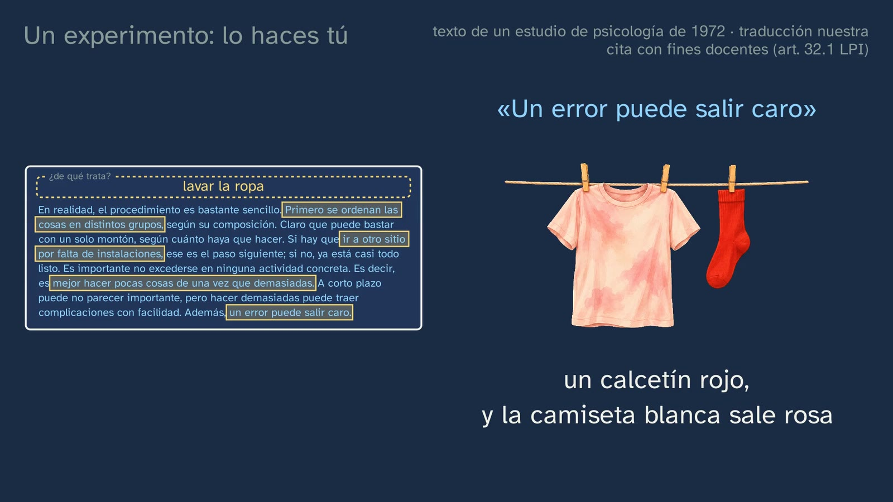
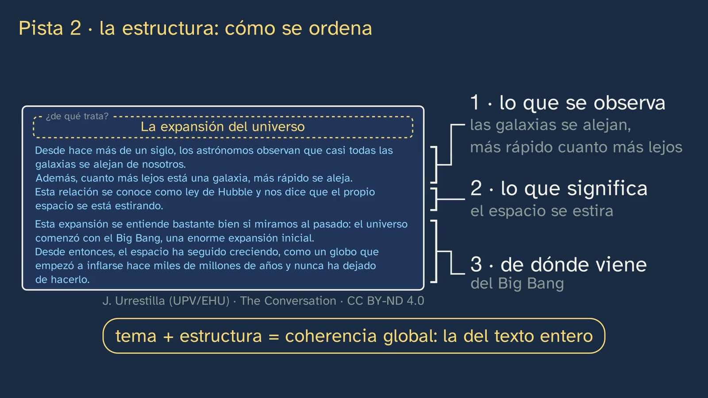

Where is the sense of a text?
In a nutshell
The class starts with an experiment that students do themselves. They hear, just once, the beginning of a text without a single difficult word ("The procedure is actually quite simple. First you arrange things into different groups…"; in the video, in Spanish: «En realidad, el procedimiento es bastante sencillo. Primero se ordenan las cosas en distintos grupos…») and they rate it: from 1 to 7, how well did they understand it? Each sentence can be understood; the text can't. Then they hear three words, «lavar la ropa» ("washing clothes"), and the same sentences fall into place first time. The words haven't changed. So where was the sense? The answer has two halves. One: the sense doesn't come whole in the words; the reader builds it, with the text's clues and with what they already know. The other: that is why a good text leaves three clues (what it is about, how it is organised and how it flows), which cohesion signals, but does not create. The route, in five stages:
- A text that hides its topic, and the 1972 experiment. The text is Bransford and Johnson's (1972, experiment II); in the video, in our Spanish translation. Fifty-two university students heard it once, split at random into three groups: with no topic, with the topic beforehand and with the topic afterwards. With a prediction from the student: the topic-afterwards group came out like the one that never knew it (2.12 and 2.29 out of 7; with the topic beforehand, 4.50). And with what the evidence is worth: the original was small; that the topic beforehand helps has been repeated with 300 adults and with about 700 university students; the topic-afterwards result is «una buena pista, no una prueba» ("a good clue, not proof").
- You build the sense. Part of it is in the text and part is added by the reader: it is the inference from class 1, «a lo grande» ("on a big scale"). When the text is understood as a whole, it is coherent, and coherence «la consiguen entre dos» ("it takes two to achieve it"): the writer, who leaves the clues, and the reader, who adds what they know.
- Three clues, on a real text. Two paragraphs by a professor of physics in The Conversation. The topic: «La expansión del universo» ("The expansion of the universe"); «Las galaxias» ("Galaxies") falls short, «El universo» ("The universe") goes too far, and it isn't the title. The structure: what each part does (what is observed, what it means, where it comes from). And the flow: each sentence latches onto something known and adds something new. It is Daneš's thematic progression, drawn as a staircase and as a comb. With their names: global coherence and local coherence.
- Coherence is not cohesion. Three texts separate them: the laundry text, stitched with connectives, which couldn't be understood without its topic; an invented one that repeats a word in every sentence and isn't about anything; and two sentences without one connective or one repeated word that are understood first time («No hubo paella. Nadie llevó el arroz», "There was no paella. Nobody brought the rice"). With Carrell (1982): "Cohesion is not the cause of coherence; if anything, it's the effect of coherence." And an image: the seams and the pattern.
- More connectives, better text? The mistake, with an invented paragraph of five connectives that don't keep what they promise, the pair «Llovía, pero salimos» / «Llovía; por eso salimos» ("It was raining, but we went out" / "It was raining, so we went out") and a study of 120 essays in which the best had no more connectives than the worst (McNamara, Crossley and McCarthy, 2010).
What it adds that the textbooks and the videos don't. In the class's review of reference videos (71 YouTube videos, 20/11/2026: 36 looked at frame by frame and 35 through their subtitles), the laundry experiment is only made into something the viewer lives through in English (Closed Stacks, 1.02 million views; Daniel Willingham, 371 thousand; John Medina, 140 thousand), and always to talk about memory or study techniques, never in a language lesson. In Spanish, one video reads three sentences and reports the result (MentesDePapel, 8:03–8:46). When the title is given, nothing happens to the words on screen: the text just comes up again, unchanged. The rating from 1 to 7 is only asked for by a channel with 721 views and by a recorded Cambridge class (19 thousand), which is also the only one that asks for a prediction about the title given afterwards. Nobody says that the sample was small, and nobody mentions replications. The most-watched Language lessons in Spanish define coherence as a property of the text: one topic, an order, and that ideas «no se deben contradecir» ("must not contradict each other") (Talía Lund, 554 thousand); the reader doesn't appear. The videos on connectives say that they give «sentido al texto» ("sense to the text") (Aula365, 2.77 million) or «mayor coherencia» ("greater coherence") (Maestra Belén Sánchez, 388 thousand). Theme and rheme are only drawn on small channels and with invented sentences. Nobody shows with a text, in Spanish, that cohesion does not give coherence, and nobody cites by name a study on connectives and quality. In our comparison with sixteen first-year Bachillerato textbook series (29 and 30/09/2026, for comparison only), none goes through the full cycle that competence 9 asks for (question, hypothesis, data, analysis and conclusion): this class starts it and class 7, a lab, closes it.
A finding from the fact-check, before you look for the text online. The 1972 article has two versions of the laundry text (p. 722). Passage A, of 162 words, is the one heard by the 52 university students of the three groups (experiment II), and it is the one the class reads. Passage B, of 180 words, which ends with "After the procedure is completed one arranges the materials into different groups again…", was heard by 21 high-school students in experiment III, which had only two groups. The one that circulates online is B, which the authors published again in a 1973 chapter (p. 400). Anyone who puts it next to the three groups and the figures 2.29, 2.12 and 4.50 is mixing two experiments.
Objective. By the end, students will be able to explain coherence as something the reader builds with the text and with what they already know, state the topic and the structure of a text, follow how its information flows and not confuse coherence with cohesion.
For readers outside Spain: the Bachillerato is the last two years of secondary school (ages 16–18), and ESO is the compulsory stage before it (ages 12–16). Spanish Language and Literature I is a core subject, taken by every student in the first year. The video is in Spanish, with English subtitles; the images on this sheet come from the video and keep their Spanish text. In Spain the decimal separator is a comma: the board writes 2,29 for 2.29. Spanish has one word, tema, for two things that English keeps apart: the topic of a text (what it is about) and the theme of a sentence (its starting point, as in theme and rheme); the class itself warns about it. Significado and sentido are meaning and sense, as in class 1; the three clues, tema, estructura and avance, are topic, structure and flow; conectores are connectives, and mecanismos de cohesión, cohesive devices. The class is about Spanish, so the examples stay in Spanish here, with an English gloss, which is the one in the English subtitles whenever the example is said in the video. Bransford and Johnson's text is quoted in its original English (passage A, p. 722): in the video Vera reads it in our Spanish translation, and the English subtitles give the original. Sources written in English (Bransford and Johnson, Carrell, Halliday and Hasan, van Dijk, Kintsch, McNamara, Crossley, Downing…) are quoted in their original words; Carrell's sentence appears on the board in our Spanish translation. The decree is quoted in our translation; the other Spanish sources (the Centro Virtual Cervantes, the Academies' glossary, the university entrance exams, the Civil Code, videos in Spanish) and Charolles's French, in the original, with our translation in brackets. The real text the class takes apart, by Jon Urrestilla Urizabal, has a licence that does not allow derivative works: its words are quoted in Spanish, exactly as written, and the English next to them is our translation (the one in the subtitles), only to help with reading. The RAE is the Spanish Royal Academy, and ASALE the Association of Academies of the Spanish Language: together they publish the Glosario de términos gramaticales (Glossary of Grammatical Terms). The Centro Virtual Cervantes (CVC) is the Instituto Cervantes's website, and ELE stands for Spanish as a foreign language. The BOE is Spain's Official State Gazette, where every law and decree is published. The PAU is the university entrance exam, taken after the second year of Bachillerato and organised region by region (this sheet cites Madrid's and Andalusia's); it is still popularly called selectividad. UPV/EHU is the University of the Basque Country.
Curriculum
Spain's Royal Decree 243/2022, Spanish Language and Literature I, a core subject in the first year of Bachillerato (consolidated text in the BOE, checked for the topic on 29 and 30/09/2026 and for this class on 20/11/2026: its latest update, of 02/07/2026, only touches article 23.4, not the Language annex). Our translation of the official Spanish text.
| Element | What the decree says | Where the class works on it |
|---|---|---|
| Core knowledge (block B, "Communication", 2. Discourse genres) | "Textual properties: coherence, cohesion and appropriateness." | Coherence, by name, at 7:42, and at two levels: global (10:20) and local (12:02). Cohesion, at 12:14–14:45, only to separate it from coherence. The three properties, together, in the summary (17:21). Appropriateness was class 5; cohesive devices, one by one, go in topic 7 |
| Core knowledge (block B, 3. Processes) | "Oral comprehension: overall sense of the text and the relationship between its parts, selection and retention of the relevant information. The intention of the sender. Detection of discriminatory uses of verbal and non-verbal language. Assessment of the form and content of the text." | Only the overall sense and retention: the text heard once and rated (2:31–4:52), and an experiment that measured exactly that, how much was understood and how much was remembered of a text that was heard (4:57–6:19). The rest of this item is not touched |
| Core knowledge (block B, 3. Processes) | "Reading comprehension: overall sense of the text and the relationship between its parts. The intention of the sender. Detection of discriminatory uses of verbal and iconic language. Assessment of the form and content of the text." | The overall sense, as topic (9:00–9:49); the relationship between the parts, as structure (9:49–10:27) and as flow (10:27–12:14). The intention of the sender only peeps through in «el título llama al lector» ("the title calls the reader in") (9:42) and in the open question (18:16) |
| Core knowledge (block B, 4. Recognition and discursive use of linguistic elements) | "Connectives, discourse markers and other lexical-semantic and grammatical procedures that contribute to the cohesion of the text." | Three families, named with their examples: repetitions, words that point to what has already been said, and connectives (12:32–12:42). What a connective does and what it doesn't (14:45–16:26). Exercise 2 |
| Core knowledge (block D, "Reflection on language") | "Drawing one's own conclusions about how the linguistic system works, with a specific metalanguage, from the observation, comparison and classification of communicative units and from the contrast between languages […]" | Three texts compared in order to draw a conclusion (12:48–14:25); the test of reading a sentence on its own (11:50); the same pair of facts with two connectives (15:34). The metalanguage: topic, structure, thematic progression, global and local coherence, cohesion, connective |
| Specific competence 2 | "To understand and interpret oral and multimodal texts, with special attention to academic texts and those of the media, grasping the general sense and the most relevant information, identifying the point of view and the intention of the sender and assessing their reliability, form and content, in order to build knowledge, to form an opinion and to widen the possibilities of enjoyment and leisure." | Its description says that understanding is "a constant process of interpreting intentions in which the knowledge shared by the interlocutors comes into play, together with all those contextual and co-textual elements that make it possible to go beyond the meaning of the text and interpret its sense": that is the class's thesis (0:33–0:54 and 7:09–7:42). And it counts among the basic skills "anticipating the content": that is what the topic-beforehand group could do (5:56) |
| Specific competence 4 | "To understand, interpret and assess written texts, with a critical sense and different reading purposes, with special attention to academic texts and those of the media, recognising the overall sense and the main and secondary ideas, integrating explicit information and making the necessary inferences, identifying the intention of the sender, reflecting on content and form and evaluating their quality and reliability, in order to respond to diverse communicative needs and interests and to build knowledge." | A text from the media, taken apart (8:06–12:14). Its description asks for strategies to "bridge the distance between prior knowledge and the knowledge supplied by the text" and warns that, without the keys, "the reader is limited to the literal interpretation of what is said": that is what happens to the student between 2:31 and 3:43. The inferences: what the reader adds in the paella (13:58) and in exercise 2 |
| Specific competence 5 | "To produce coherent, cohesive, appropriate and correct written and multimodal texts, with special attention to the discourse genres of the academic sphere, in order to build knowledge and respond in an informed, effective and creative way to specific communicative demands." | In the video, only as a criterion for writing: «escribir bien es pensar en quien te va a leer: decirle de qué va, ordenárselo, y enganchar cada cosa nueva a algo que ya tenga» ("writing well means thinking about whoever will read you: telling them what it's about, ordering it, and hooking each new thing onto something they already have") (16:39). Exercise 3 is five sentences; writing a whole text, in class 7 |
| Specific competence 9 | "To consolidate and deepen explicit and systematic knowledge of the structure of the language and its uses, and to reflect autonomously on linguistic and discursive choices, with the appropriate terminology, in order to develop linguistic awareness, to increase the communicative repertoire and to improve skills both in oral and written production and in comprehension and critical interpretation." | Its description asks for work "through processes of inquiry", with "the formulation of hypotheses and rules, the use of counterexamples". Here, the predictions before the data (3:38 and 5:40), the counterexamples (the bike and the paella, against "cohesion is coherence") and the terminology |
| Criterion 2.1 | "To identify the overall sense, the structure, the relevant information according to communicative needs and the intention of the sender in complex oral and multimodal texts from different spheres, analysing the interaction between the different codes." | In part: the overall sense of a text that is heard (2:31–4:52). The structure of an oral text is not worked on; that of a written text is (criterion 4.1) |
| Criterion 4.1 | "To identify the overall sense, the structure, the relevant information and the intention of the sender of specialised written and multimodal texts, with special attention to academic texts and those of the media, making the necessary inferences and with different reading purposes." | In full: the topic (9:13–9:49), the structure (9:49–10:27) and the inferences that «esta relación» and «esta expansión» ("this relationship" and "this expansion") call for (10:45–10:55), in a popular-science text from the media. Exercise 1 and the variant of the activity |
| Criterion 5.1 | "To produce coherent, cohesive academic texts with the appropriate register on curricular topics or topics of social and cultural interest, preceded by a planning process that takes into account the communicative situation, addressee, purpose and channel, and by drafting and revising drafts individually or among peers, or by means of other reference tools." | In part: the class gives the criterion for planning with the addressee in mind (16:39) and sets a short text (exercise 3). The academic text, with its planning and its revision, is class 7 |
| Criterion 9.2 | "To explain and argue the interrelation between the communicative purpose and the linguistic choices of the sender, as well as their effects on the receiver, using explicit knowledge of the language and a specific metalanguage." | Choosing «pero» or «por eso» ("but" or "so"), and what the reader understands in each case (15:34–15:47); hiding the topic or stating it, and its effect (3:24–4:52); exercises 1 and 2 |
| Criterion 9.3 (only in the activity) | "To prepare and present the results of small research projects on relevant aspects of how language works, formulating hypotheses and establishing generalisations, using the appropriate linguistic concepts and terminology and consulting dictionaries, handbooks and grammars autonomously." | The video does not state it. This sheet's activity works on it: hypothesis, data from the class itself, count and what cannot be concluded. It is class 7's criterion |
The decree's own words. In the Language part, the decree does not say «tema» ("topic") of a text: it says «sentido global» ("overall sense"). It does not say «progresión temática» ("thematic progression"), or «rema» ("rheme"), or «global» or «local» coherence. «Estructura» ("structure") is in criteria 2.1 and 4.1 and, in the core knowledge, as the "relationship between its parts". Connectives only come up in core knowledge B.4, and tied to cohesion. Criterion 9.1, which the class does not state, also fits: it asks students "to identify and remedy problems of reading comprehension using explicit knowledge of the language and its use".
What students bring. From class 1, the difference between meaning (what the words say) and sense (what they communicate in their situation), inference and shared knowledge («¿Vienes a la fiesta del sábado?» — «Tengo examen el lunes», "Are you coming to the party on Saturday?" — "I've got an exam on Monday"): that class saw it in an utterance; this one, in a whole text. From class 5, appropriateness, and its three exercises, which are solved at the start (0:54–2:09). From lower secondary (ESO), the same core knowledge: in years 1 and 2, and again in years 3 and 4, the "Textual properties: coherence, cohesion and appropriateness", "Reading comprehension: overall sense of the text and the relationship between its parts" and the "Cohesive devices"; in years 3 and 4, with the "Devices of internal reference, grammatical and lexical (nominalisations and hypernyms of abstract meaning)", which is exactly what «esta expansión» and «esta relación» ("this expansion" and "this relationship") are (Royal Decree 217/2022, Spanish Language and Literature, block B).
Where it comes back. Class 7, «Laboratorio: escribir para que te entiendan» ("Lab: writing so that you're understood"), repeats the experiment with each student's own readers and with the five-sentence text from exercise 3, and works on the writing process of criterion 5.1. Cohesion, with its devices, has its own topic: topic 7 of the plan, «La cohesión: lo que mantiene unido un texto» ("Cohesion: what holds a text together": reference, synonyms and ellipsis; connectives and discourse markers; verb tenses).
How the class is built
Video chapters
Almost nineteen minutes, in eleven chapters. It is a theory class, with Vera, without a lab coat, at her desk. It works on two real texts, which are not ours: the passage from the 1972 experiment, in our Spanish translation, and two paragraphs from a popular-science article of 2026, word for word. All the other examples (the bike, the paella, the cat, the phones, the rain and the exercises) are invented, and the board says so. Each text's page has a slot at the top, «¿de qué trata?» ("what is it about?"), which comes back every time a topic is looked for. In the flow, the known is underlined in blue and the new is marked in yellow. Cohesion always goes in red thread: the seams, and the connectives, on stickers with a red edge.
| Chapter (minute) | What it does | Learning principle |
|---|---|---|
| What we'll see (0:00) | Vera says hello; the map of the topic, with the fifth class for a moment and the sixth highlighted (0:07). The previous class, by name: appropriateness (0:11) | Knowing where you are (multimedia learning: signalling) |
| What you already know (0:20) | From class 1: meaning and sense, what was each one? The two cards come up empty (0:30; a short silence, no countdown). Then they fill in, with «¿Tienes hora?» ("Got the time?"), and between them, the arrow of inference: «un paso que da quien escucha» ("a step taken by the listener") (0:33–0:54) | Retrieval (Roediger and Karpicke, 2006), with the question in view |
| The solutions (0:54) | Class 5's three exercises, each with its question in grey: the public-address announcement, with its field, tenor and mode (0:54); the sentence that is formal, but clear (1:25); and tú or usted with the neighbour, the camp leader and the interview (1:46) | Spacing; the solutions, short and with their questions |
| A text that hides its topic (2:09) | The hook, lived through. The page is there from the start, with the topic slot empty and the announcement inside: «te leo el principio de un texto» ("I'll read you the beginning of a text"), «una sola vez» ("just once"), «ni una palabra difícil» ("not a single difficult word"). Vera reads the beginning of the text, which is typed onto the page (2:31). The rating, from 1 to 7, from «nada» ("nothing") to «todo» ("everything") (3:09; countdown at 3:19). «Cada frase, sí» ("Each sentence, yes") and «el texto, no» ("the text, no") (3:26), and the prediction: will your rating go up? (3:38; countdown at 3:39). The topic fills the slot, «lavar la ropa» ("washing clothes"); the page shrinks, and each vague sentence finds its drawing: the three piles, the launderette, the full washing machine and the pink T-shirt (3:43–4:18). The end of the text, now with the topic, and the second rating, on a large scale with «antes: ?» and «ahora: ?» ("before: ?" and "now: ?") (4:19; countdown at 4:49). Vera, to camera: «Las palabras eran las mismas. Entonces, ¿dónde estaba el sentido?» ("The words were the same. So, where was the sense?") (4:52) | The hook, with its context; the problem before the explanation (Sinha and Kapur, 2021); predicting before seeing; taking part, not just watching |
| The 1972 experiment (4:57) | The study is introduced in the centre, with its year («1972 · un experimento de psicología», "1972 · a psychology experiment"), its two authors and their university, and then moves to the corner as a fact card. In come 52 dots, one per person, next to a page with sound waves («una sola vez», "just once"), and they are split into three groups (17, 18 and 17). Each group, in its row (no topic, topic beforehand and topic afterwards), with three columns: before, they hear it once, and after (4:57). The prediction is made on that same design: a yellow frame on the «tema después» ("topic afterwards") row, a «?» and two arrows towards the other two rows (5:40; countdown at 5:47). The bars grow from zero: the rating (2.29, 4.50, with «casi el doble», "almost double", and 2.12) and, next, the ideas recalled, out of 18 (2.82, 5.83 and 2.65), with a brace from the first to the third, «como el grupo que no lo supo nunca» ("like the group that never knew it") (5:52). «¿Nos podemos fiar?» ("Can we trust it?"), in large type, with three clouds of dots, of 52, 300 and about 700 people, and the tick for «saber el tema antes ayuda» ("knowing the topic beforehand helps") (6:19). Why knowing it afterwards wouldn't help: with the topic beforehand, the sentences are put together; with the topic afterwards, they stay loose, and the «lavar la ropa» card arrives late (6:45) | How do we know?, with the evidence and its limit; predicting before seeing (White and Gunstone, 1992) |
| You build the sense (7:09) | The page on one side, the reader with her thought cloud on the other, and in between, a gap with its «?» that fills up piece by piece: three pieces arrive from the page and three from the cloud, where the washing machine, the piles and the T-shirt with the red sock come up, each thing with its word (7:09). The word: «coherente · se entiende como un todo» ("coherent · understood as a whole"); and the writer, who comes in on the left and «deja las pistas» ("leaves the clues") (7:42). Vera, at the midpoint: «un texto no lleva dentro todo su sentido. Cuenta contigo» ("a text doesn't carry all its sense inside it. It counts on you") (8:00) | First the intuition, then the exact version |
| Three clues: topic, structure and flow (8:06) | A real text: while it is introduced, the empty page says who wrote it and for whom; then it is read and typed sentence by sentence (8:23). Clue 1, the topic: stop and think (9:13; countdown at 9:17); «Las galaxias» ("Galaxies") and «El universo» ("The universe") try their luck, each with its mark on the page: a brace that «sólo cubre el principio» ("only covers the beginning") and an arrow from top to bottom, «ahí cabe cualquier cosa» ("anything fits in there") (9:24); the topic is not the title (9:34). Clue 2, the structure: three braces, each with what its part does, and global coherence (9:49). Clue 3, the flow: the hooks go from the new in one sentence to the known in the next, and the sentences step down like a staircase (10:27); its name, thematic progression, with the staircase on one side and, on the other, the comb, with «Mi gata» ("My cat") (11:13); the test of the sentence on its own and, at the end, together, local coherence, global coherence, which comes back as a reminder, and non-contradiction (11:50) | Real texts as a model: taking them apart (Rose and Martin, 2012); one clue at a time (segmenting); stop and think |
| Coherence is not cohesion (12:14) | «El avance está en las ideas» ("The flow is in the ideas") and «lo que se ve: las palabras que lo marcan» ("what you see: the words that mark it"): the four hooks of the real text are cohesive devices, with their three families (12:14). Then, three examples with the same scoreboard, «¿costuras?» ("seams?") and «¿se entiende?» ("can it be understood?"). The laundry page comes back, with its five connectives circled: seams, yes; understood, no (12:48). The bike text, stitched word by word, with a countdown (13:28): also yes and no (13:31). The paella without rice: no and yes; and Carrell's quotation, typed out (13:46). The seams and the pattern, in three drawings: the paper pattern, the shirt with its seams and the scraps (14:25) | Comparing three cases side by side; counterexamples (competence 9) |
| More connectives, better text? (14:45) | The idea, large and alone, «más conectores = mejor texto» ("more connectives = better text"), is crossed out («es un error», "it's a mistake") and moves up, crossed out, to the header; the paragraph about phones, with each connective as a sticker and a count that grows to «5 conectores» ("5 connectives") (14:55; countdown at 15:16). «Un conector es una promesa» ("A connective is a promise"): the promises are not kept, the stickers come unstuck and what is left is «las ideas no tienen esa relación» ("the ideas don't have that relationship") (15:19); «Llovía, pero salimos» ("It was raining, but we went out") and «Llovía; por eso salimos» ("It was raining, so we went out"), and what the connective does there: «le dice a quien lee qué relación has pensado tú» ("it tells the reader what relationship you had in mind") (15:34); «un conector señala la relación; no la crea» ("a connective signals the relationship; it doesn't create it") (15:55). The 120 essays and the thirteen ways of counting connectives: «13 de 13» ("13 out of 13"), «sin diferencia significativa entre las mejores y las peores» ("no significant difference between the best and the worst") (15:59) | The mistake, in view, taken apart by reasoning (Muller et al., 2008); how do we know? |
| Where is the sense? (16:26) | The whole answer to the question in the title: the pieces of the sense arrive once again from the page and from the cloud; and what it means for the writer: three clues to leave (16:26). The summary, with a warning that it is a repetition, in four boxes (the second: «coherencia global: tema y estructura. Local: el avance», "global coherence: topic and structure. Local: the flow"), and the three properties of a text (16:50) | Closing the hook; spacing |
| Practice and keep thinking (17:28) | The three exercises, on three cards that fill in as they are read (17:28); the open question, with a page between the writer and the reader (18:16; countdown at 18:28); the next class (18:33); goodbye (18:43) | Retrieval; the open question (article 9 of the channel's Constitution) |


A plan for a 50-minute lesson
The experiment with the laundry text can only be done before watching the video: afterwards, the whole class knows the topic. That is why the plan starts without the video and without saying what the class is about.
| Minutes | What to do |
|---|---|
| 0–10 | No video: the experiment in two halves (this sheet's activity, steps 1 to 5). In the two minutes of waiting, the "Before you start" table on the worksheet. Collect the recall sheets. |
| 10–16 | Video from 0:00 to 4:57. Anyone who had the topic on their slip does not say it. At 0:30 the video's silence is enough; at 3:19, 3:39 and 4:49, its countdown (questions 1 and 2 on the worksheet). At 4:57, with Vera's question, pause: each student writes in one line where the sense was (question 3) and keeps it for the end. |
| 16–19 | Video from 4:57 to 7:09. Pause at 5:47: by a show of hands, which group will the topic-afterwards group resemble? Write the three counts on the board (like the topic-beforehand group, like the no-topic group, in between) and carry on. |
| 19–28 | The activity, steps 6 to 8: the hypothesis for the class itself, the count and what cannot be concluded. |
| 28–42 | Video from 7:09 to the end (18:53). At 9:17, 13:28 and 15:16 the countdown is enough (questions 7, 10 and 11). If you want more time for the topic, pause at 9:17 and write three or four suggestions on the board before carrying on: afterwards you see which one falls short and which one goes too far. The exercises, for homework: their solutions open class 7, and the third is its material. |
| 42–50 | The open question, as a debate (pointers in "Keep thinking"). And back to the line written at minute 4:57 and to the "Before you start" table: would anyone change it? |
If the class did not do class 5's exercises, the video can be started at 2:09. If students have watched the video at home, the experiment no longer works with this text: in its place, the variant of the activity (taking another real text apart).
Typical mistakes and how they are handled
With an honest warning, as in the topic's other sheets: none of these mistakes has been measured with Spanish Bachillerato students. The first two are the ones the topic sheet anticipates for this class; the others circulate in videos with hundreds of thousands of views or are predictable from what the class teaches, and we say where each one comes from. The quotations from videos come from their automatic subtitles (review of reference videos of 20/11/2026), with their minute.
- "More connectives, better text". What circulates: connectives relate ideas «dando sentido al texto» ("giving sense to the text") (Aula365, 2.77 million views, 0:16); «un buen uso de los conectores le da una mayor coherencia a nuestro discurso» ("a good use of connectives gives our discourse greater coherence") (Maestra Belén Sánchez, 388 thousand, 0:17); to join paragraphs, «lo más importante son los conectores» ("the most important thing is connectives"), and you have to use «un montón» ("loads") (LenGuay, 321 thousand, 3:40 and 4:01). The evidence against: in 120 essays by first-year university students in the United States, scored by experts, none of the 13 indices of connectives distinguished the good essays from the poor ones or correlated with the score, and neither did any of the 13 indices of coreference (McNamara, Crossley and McCarthy, 2010, pp. 68 and 73). The same team found something similar with another 184 and another 315 essays: what weighed in the score was the coherence the rater saw, not the cohesion indices (Crossley and McNamara, 2010 and 2011). They are three studies by a single team and at a single university, in English: a solid result within that frame, not a law. In Spanish we have found no study that compares good and poor texts by their number of connectives. What there is in Spanish is something else, and these are clues, because the samples are small: in essays by 60 Costa Rican university students, connectives are little used and the same one is always repeated (Sánchez Avendaño, 2005, pp. 169 and 195); in 197 texts by 36 secondary students at one Chilean school, of 100 errors with causal connectives, 86% were errors of omission (Montero and Ferreira, 2025, pp. 160 and 175). The class raises the mistake at 14:45, takes it apart by reasoning (a connective is a promise, 15:20; «señala la relación; no la crea», "it signals the relationship; it doesn't create it", 15:55) and with the data (15:59). And the mistake in reverse: "connectives aren't needed". No: the class says so twice («las costuras hacen falta», "the seams are needed", 14:38; «eso no quiere decir que los conectores sobren», "that doesn't mean connectives aren't needed", 16:18). In young writers, cohesive ties do go with quality, and so does linking paragraphs well to one another (Crossley, 2020, pp. 426–427). And in Andalusia's PAU what is marked is «el empleo adecuado de los marcadores discursivos» ("the appropriate use of discourse markers"), not their number.
- "The sense is in the words", or "if I know all the words, I understand the text". It is the topic's underlying mistake: believing that communicating is encoding and decoding. The closest thing measured in Spain concerns writing: in the first year of Bachillerato, the idea that writing is transmitting information scored 4.04 out of 6, almost as much as the idea that writing is building knowledge, 4.24 (Villalón and Mateos, 2009, with 163 students; the figure, from Villalón's thesis, Autonomous University of Madrid, 2010, table 6, which we have not reopened for this class). The laundry text takes it apart in two minutes: it has no difficult word, and without its topic it can't be understood (3:26–3:32). The decree warns of the same thing: without the keys, "the reader is limited to the literal interpretation of what is said" (competence 4). The class answers it at 7:09 and fixes it with Vera's sentence at the midpoint: «un texto no lleva dentro todo su sentido. Cuenta contigo» ("a text doesn't carry all its sense inside it. It counts on you") (8:00).
- "Coherent means that it doesn't contradict itself", or "that it is logical". That is how it is defined in the most-watched Language lessons: «las ideas no se deben contradecir» ("ideas must not contradict each other") (Talía Lund, 554 thousand, 0:50); «no tiene que tener contradicciones internas» ("it must not have internal contradictions") (Educatina, 245 thousand, 0:57); «principio de no contradicción» ("principle of non-contradiction") (Clases Particulares en Ávila, 226 thousand, 2:36). It is not false: it is a condition (Charolles's third meta-rule, 1978, p. 22; and in the CVC, the concepts of the text «no contradicen el conocimiento del mundo que tienen los interlocutores», "do not contradict the knowledge of the world that the interlocutors have"). But it is not enough: the laundry text doesn't contradict itself anywhere, each sentence is logical, and without its topic nobody understands it. The class leaves non-contradiction in its place, at the end of the three clues: «una condición más, de sentido común» ("one more condition, plain common sense") (12:06). Watch out for examples made of absurd single sentences («El gato ladraba en el tejado», "The cat was barking on the roof", Profe Mónica, 2:48): they teach that a sentence clashes with what we know of the world, not what makes a text coherent.
- "The topic is the title", or the first sentence, or a summary. In videos: «el tema generalmente es reconocible, pues este se encuentra presente en el título de los textos» ("the topic is generally recognisable, since it is present in the title of texts") (Puntaje Nacional Chile, 430 thousand, 0:44). Sometimes it coincides; often it doesn't. The title of the class's article is a question, «¿Por qué el universo no deja de crecer?» ("Why doesn't the universe stop growing?"), and its topic, «La expansión del universo» ("The expansion of the universe"): «el título llama al lector; el tema dice de qué trata el texto» ("the title calls the reader in; the topic says what the text is about") (9:34–9:47). On the form of the topic, the videos' recipes contradict one another: a sentence «con su sujeto, verbo, complemento» ("with its subject, verb, complement") (Arantxa Tarrero, 52 thousand, 1:05–2:09); «siempre se enuncia con un sintagma nominal» ("it is always stated with a noun phrase") (LenGuay, 162 thousand, 1:45); a nominal phrase without «un verbo conjugado» ("a conjugated verb") (Pepe Ríos, 285 thousand, 3:03–3:24). They agree on what matters: short and specific. The class says «en muy pocas palabras, y sin verbo conjugado: como "lavar la ropa"» ("in very few words, and with no conjugated verb: like 'washing clothes'") (9:07), and gives a better test than any recipe: that it covers the whole text and nothing more («Las galaxias» falls short; «El universo» goes too far, 9:24–9:32). Where the PAU has asked for it by that name (Madrid, model exam for 2025-2026), it was «de manera concisa en una o dos líneas» ("concisely, in one or two lines").
- "The theme is the subject", or whatever comes first in the sentence. This is the other tema: the theme of theme and rheme, the starting point of each sentence. The class warns: «Ojo: aquí "tema" es el punto de partida de cada frase, no el tema del texto» ("Careful: here 'theme' is the starting point of each sentence, not the topic of the text") (11:18). In videos: the theme «suele coincidir con el sujeto» ("usually coincides with the subject") and the rheme «con el predicado» ("with the predicate") (Javier Lengua, in his video on theme and rheme, 1:20); «TEMA: la primera información» ("THEME: the first piece of information") (PERUANO ESPAÑOL, 51 thousand, 1:52). For the RAE's Glossary, the theme is what the sender «presenta como conocido por el destinatario» ("presents as known by the addressee"), and «típicamente» ("typically") it heads the sentence: typically, not always. Two counterexamples to hand. In exercise 1, «Dentro había una nota» ("Inside there was a note"): the known is «Dentro» ("Inside": inside the backpack), and the subject, «una nota» ("a note"), is the new. And in the text of the activity's variant, «Los perros son un ejemplo de ello» ("Dogs are an example of this"): the new comes first and the known, «ello» ("this"), last.
- "Stating the structure is counting the paragraphs", or fitting any text into "introduction, development and conclusion". It is not in the videos we looked at: it is predictable. The class's text has two paragraphs and three parts, and the class says so in these words: «decir la estructura no es contar párrafos: es decir qué hace cada parte» ("stating the structure isn't counting paragraphs: it's saying what each part does") (10:15). It is what the entrance exams ask for: in Andalusia, «indicar razonadamente su estructura» ("to indicate its structure, giving reasons"); in Madrid's model exam for 2026-2027, «Determine la estructura interna del texto escogido y relaciónela con su tipología textual» ("Determine the internal structure of the chosen text and relate it to its text type").
- "Coherence and cohesion are the same thing", or "without cohesion there is no coherence". In videos: «para que exista coherencia debe haber cohesión; sin cohesión no hay coherencia» ("for coherence to exist there must be cohesion; without cohesion there is no coherence") (Alejandro Rubio, 24 thousand, 2:29); «son como siameses» ("they are like Siamese twins") (LenGuay, 49 thousand, 9:00); cohesion is the property that «le proporciona sentido tanto a los enunciados como al conjunto de estos» ("gives sense both to the utterances and to the set of them") (Talía Lund, 1:26–1:32). The Centro Virtual Cervantes says something else: «La cohesión no es una propiedad necesaria ni suficiente de la textualidad; esta depende en última instancia de la coherencia» ("Cohesion is neither a necessary nor a sufficient property of textuality; textuality depends ultimately on coherence") («Cohesión», "Cohesion", Diccionario de términos clave de ELE, its dictionary of key terms in Spanish as a foreign language). The class separates them with three texts (12:48–14:25): stitched and not understood (the laundry text, without its topic), stitched and with no topic (the bike), and without one connective or one repeated word, but coherent (the paella). On the board, all three carry the same scoreboard: «¿costuras?» ("seams?") and «¿se entiende?» ("can it be understood?"). In the classroom, the risk is a subtler confusion: local coherence («cada idea encaja con la anterior», "each idea fits with the one before", 12:02) and cohesion («lo que ata unas frases con otras, a la vista», "what ties sentences to one another, in plain sight", 12:28) look alike. The class's sentence that separates them: «El avance está en las ideas. Lo que se ve son las palabras que lo marcan» ("The flow is in the ideas. What you see are the words that mark it") (12:14). More, in "For teachers".
- "If I don't understand it, the text is bad", or, the other way round, "if I don't understand it, it's my fault". Neither, just like that: coherence «la consiguen entre dos» ("it takes two to achieve it") (7:51). The same text can be coherent for one reader and not for another: «un discurso puede resultar incoherente para un destinatario porque carece del conocimiento del mundo necesario para comprender acertadamente dicho mensaje» ("a discourse may turn out to be incoherent for an addressee because they lack the knowledge of the world needed to understand that message properly") (CVC, «Conocimiento del mundo», "Knowledge of the world"). The class shows both cases. In the laundry text, it was the reader who was missing the key. In the bike text, «no te falta nada a ti: el tema no lo tiene el texto» ("you aren't missing anything: it's the text that has no topic") (13:39). For the reader, the way out is the one the decree asks for: strategies to "make up for the lack of the prior knowledge required by a given text" (competence 4), starting by finding out what it is about before reading it. For the writer, the one at 16:39: thinking about whoever will read you. And the mistake in reverse: "if I am the one who supplies the sense, any reading goes". No: the sense is built «con las pistas del texto» ("with the text's clues") (16:36), and there are readings the text does not support, just as there are topics that go too far or fall short. How far that freedom goes is the open question, and the teacher does not close it.
- The experiment, told wrongly. It circulates widely, in videos and in teaching materials, and with mistakes:
- The text that circulates is not the one from the three groups: it is passage B, from experiment III (above, "In a nutshell"). It also circulates retouched: with "items" for "things", or without its initial "actually".
- "They read it". They heard it, just once, read aloud by the experimenter: "a single auditory presentation of the materials" (p. 722). A video with 108 thousand views says "They gave people a short paragraph to read" (be.minimal, 2:10). The large replications, on the other hand, are reading studies.
- "They were given a title". They were told what it was about, with a sentence written on their instruction sheet: "The paragraph you will hear will be about washing clothes" (p. 722). The authors speak of "topic", not of "title"; that is why the class says «tema» ("topic"), which is also what students then learn to state.
- "The topic, afterwards, never helps". In experiment II, the topic-afterwards group came out like the no-topic group. But the authors only tested the topic-beforehand group against each of the other two (p. 723): that the topic-afterwards and no-topic groups are the same is seen in the means, not in a statistical test. And in experiment IV of the same article, the topic given afterwards raised the comprehension rating (3.82 against 2.44), though not recall (3.18 against 3.22). All of it, with groups of 9 to 18 people. The class puts it like this: «una buena pista, no una prueba» ("a good clue, not proof") (6:41).
- "Without the topic, nothing stays". With 152 university students in three experiments, the title improved comprehension and free recall, but not recognition (Alba et al., 1981; we have only read its abstract). Without the topic, the sentences go in; what is missing is putting them together. The class: «sueltas se quedaron» ("loose they stayed") (6:59).
- "You understand twice as much". In 1972, almost: 4.50 against 2.29. In the large replications, less: 0.26 against 0.15 of the ideas (Miller, Cohen and Wingfield, 2006), and 0.59 against 0.42 (Long and Spooner, 2010, experiment 1). And even with the topic beforehand, in 1972 people recalled 5.83 ideas out of 18: a third.
- The exaggerations. That the experiment "changed educational neuroscience", or that "Neurobiology shows…" (be.minimal, 1:26 and 7:55): it is psychology from 1972, with no brain measured. And it should not be confused with the balloons text, from the same article, which is understood with a drawing, not with a topic (experiment I).
Questions and solutions
Stop and think (in the video)
- In class 1 we separated meaning and sense. What was each one? (0:30; a short silence, no countdown) The meaning is what the words say; the sense, what they communicate in their situation. In the street, «¿Tienes hora?» ("Got the time?") isn't asking if you're wearing a watch: it's asking you for the time. And you get from the one to the other with an inference: a step taken by the listener. The video answers at 0:33. "The literal and what is meant" or "what it says and what is understood" count. They are the decree's words: to "go beyond the meaning of the text and interpret its sense" (competence 2).
- What rating do you give it? (3:09; the countdown, at 3:19) It has no solution: it is each person's own data. A low rating is to be expected, and the video takes it for granted («Seguramente, una nota baja», "Probably a low rating", 3:24). If someone gives a 6 or a 7, it is worth asking them what the text is about: either they have hit on the topic, and then they had the key, or they are rating the fact that they understand each sentence, which is exactly what the class separates at 3:26 («cada frase, sí» and «el texto, no»: "each sentence, yes" and "the text, no"). Two differences from the experiment, so as not to compare what can't be compared. In 1972, the scale went from "very difficult to comprehend" (1) to "very easy" (7), with "moderate" at 4 (p. 720). And the participants heard the whole text, in English; the student has heard eight of its twelve sentences, translated into Spanish.
- Will your rating go up? (3:38; the countdown, at 3:39) It is a prediction, and the video does not answer it in words: the student answers it with their second rating. What is interesting is the reason they give before seeing: "because I'll know what it's talking about" is already half an answer to the class's question.
- This time, with the topic in front of you, did you understand it first time? Rate it again. (4:42; the countdown, at 4:49) Their second rating. The video does not say what has happened to it: it takes it for granted in Vera's sentence («Las palabras eran las mismas», "The words were the same", 4:52). In the classroom, by a show of hands: how many saw it go up? Careful: the student's two ratings are not the experiment. They have reread the beginning with its drawings and heard the end with the topic. In 1972 each person was in one group only, and it makes sense: once you know the topic, you can't go back to not knowing it. Their two ratings are not to be compared with the 2.29 and the 4.50.
- So, where was the sense? (4:54; Vera, to camera) It is the class's question. It is answered in two goes, and the voice says so. «Ya podemos empezar a contestar» ("Now we can start to answer") (7:09): «Una parte, en el texto. Y otra, en ti: en todo lo que sabes de lavar la ropa» ("Part of it, in the text. And part of it, in you: in everything you know about washing clothes"). And «Ya podemos contestar del todo» ("Now we can answer in full") (16:26): «No está entero en sus palabras. Lo construye quien lee, con las pistas del texto y con lo que ya sabe» ("It isn't all in its words. The reader builds it, with the text's clues and with what they already know"). If an answer is written in class at minute 4:57, it is predictable that "in the topic", "in my head" or "in the words" will come up (we have not tried it). The most tempting is "in the topic", and no: the topic is three words in Spanish, «lavar la ropa». What those three words do is let in everything the reader knows about washing clothes.
- The group that learned the topic afterwards: which one will it resemble? The one that knew it beforehand, or the one that never knew it? (5:40; the countdown, at 5:47) The one that never knew it: an average rating of 2.12, against 2.29 with no topic and 4.50 with the topic beforehand; and 2.65 ideas recalled out of 18, against 2.82 and 5.83 (table 2, p. 723). The video answers at 6:00, and gives the authors' explanation at 6:45: what you already know only helps if you have it in mind while you listen (our summary of p. 724). Many may well bet on "in between": in the only recorded class we have seen ask for this prediction, the audience bet that the topic-afterwards group would come out between the other two (a sample lecture from the University of Cambridge, 5:30–6:45). What the figure does not say: that knowing the topic afterwards never helps (mistake 9). What matters is not getting it right, but having predicted before seeing.
- What is this text's topic? (9:13; the countdown, at 9:17) «La expansión del universo» ("The expansion of the universe"). The video answers at 9:22. These count: «El universo en expansión» ("The expanding universe"), «El origen y la expansión del universo» ("The origin and the expansion of the universe") or, more precisely, «La prueba y el origen de la expansión del universo» ("The evidence for the expansion of the universe and its origin"). These fall short: «Las galaxias» ("Galaxies": only the first two sentences), «La ley de Hubble» ("Hubble's law": only the third) and «El Big Bang» ("The Big Bang": only the last two). These go too far: «El universo» ("The universe"), «El espacio» ("Space") or «La astronomía» ("Astronomy"). «El universo se expande» ("The universe is expanding") says the same thing, but it is a whole statement, with its verb in a finite form: as an idea it counts, and as a statement of the topic the short form is asked for. The test for the classroom is the video's: does it cover the five sentences, and nothing more?
- «Esta relación se conoce como ley de Hubble» ("This relationship is known as Hubble's law"). What relationship? (11:56; in passing, without a pause) The one the second sentence has just stated: the farther away a galaxy is, the faster it moves away. «Esta relación» ("This relationship") is a noun with a demonstrative that picks up that whole sentence, and without it, it points to nothing: «su gancho se queda en el aire» ("its hook is left hanging in mid-air") (12:00). It is the proof that each sentence leans on the one before, and it works with any text: read one sentence on its own and see which word is left without an owner.
- «Ayer me compré una bici. Las bicis tienen dos ruedas…» ("Yesterday I bought a bike. Bikes have two wheels…"). But what is it about? (13:26; the countdown, at 13:28) Nothing (13:31). Each sentence repeats a word from the one before, and each one, on its own, can be understood; but there is no topic that covers them all. If someone answers "a bike", "round things" or "the Moon", apply the test from minute 9:24: each answer covers one or two sentences, and falls short. If someone answers "whatever occurs to someone looking out of their window", they have done something interesting: they have looked for a topic for the text that the text does not give. It is what the 1972 participants who did not know the topic reported: they searched for "a situation that the passage might be about" (pp. 724–725). A reader always tries to build a sense.
- It has five connectives. Is it a good text? (15:15; the countdown, at 15:16) No (15:19). Each connective promises a relationship that the ideas don't have: «sin embargo» ("however") promises a contrast and «por lo tanto» ("therefore"), a consequence, and here none of them is kept. It may happen that someone finds sense in one stretch: «tienen cámara; por lo tanto, mi primo se ha comprado uno» ("they have a camera; therefore, my cousin has bought one"). They are doing what the class says a reader does: adding what the text doesn't bring. The question to put back to them is what the text says, and the text does not say that the cousin wanted a camera. For the classroom, what the video doesn't do: fixing it. With the same ideas, put in order, almost all the connectives can go. For example, in a version of ours: «Los móviles son muy útiles: sirven hasta de cámara. Sin embargo, en mi instituto están prohibidos» ("Mobile phones are very useful: they even work as a camera. However, they are banned at my school"). One connective is left, and it keeps what it promises.
- If the sense is built by whoever reads, can a text say something its writer never meant to say? What do you think? (18:22; the countdown, at 18:28) No verdict (article 9 of the channel's Constitution). The two positions, with their best argument, and the pointers for the debate, below, in "Keep thinking".
![The results of experiment II (Bransford and Johnson, 1972, table 2, p. 723): ideas recalled, out of 18, with no topic (2.82), with the topic beforehand (5.83) and with the topic afterwards (2.65); a brace joins the first bar and the third, «como el grupo que no lo supo nunca» (‘like the group that never knew it’). The comprehension rating, which the video shows just before, came out the same way: 2.29, 4.50 and 2.12 out of 7. They are means of 17, 18 and 17 people. The board is in Spanish, with decimal commas.](img/p13.jpg)


From the student worksheet
- Before you start. There is no solution: it is what each person believes before the class. At the end, what the class says about each row. Having no difficult words helps, but it is not enough: the laundry text had none (2:22). Connectives signal, and a text is not understood better just because it has more of them (12:50 and 15:59). Not contradicting itself is a condition, not the definition (12:06). Knowing what it is about is the first clue (9:00), and what changed everything in the hook (3:43). The ideas going in order is the second (9:49). And the reader knowing something about the subject is half the answer (7:09): it is the only one of the six that does not depend only on the writer. That is why writing well means thinking about whoever will read (16:39). What cannot be concluded from the class's count: what "students" believe. It is one group, and the table suggests the answers.
- While you watch the video.
- The meaning, what the words say; the sense, what they communicate in their situation (0:33).
- Their two ratings. The words haven't changed: what has changed is that now they know what it is about, and with that comes in what they know about washing clothes. «Las cosas» ("things") are the clothes; «otro sitio» ("somewhere else"), the launderette; «un error» ("a mistake"), a red sock in with the whites (3:49–4:18). Those glosses are the class's, not the authors'.
- Their own, whatever it is. At the end, compared with the class's (16:26).
- Their bet. The answer: the one that never knew it. Average rating, out of 7: 2.29 with no topic, 4.50 with the topic beforehand and 2.12 with the topic afterwards (5:52–6:06).
- That knowing the topic beforehand helps: it has been repeated with hundreds of people (300 adults and about 700 university students). The topic-afterwards result has only been seen with small groups: «una buena pista, no una prueba» ("a good clue, not proof") (6:19–6:45).
- Part of it, in the text; part of it, in the reader: in what they know (7:14–7:20). A text is coherent when it is understood as a whole (7:43). The two are the writer, who leaves the clues, and the reader, who adds what they know (7:51–7:58).
- «La expansión del universo» ("The expansion of the universe") (9:22). «Las galaxias» ("Galaxies") falls short: it only covers the beginning. «El universo» ("The universe") goes too far: anything fits in there. The title, «¿Por qué el universo no deja de crecer?» ("Why doesn't the universe stop growing?"), calls the reader in; the topic says what the text is about (9:24–9:47).
- The first says what is observed: galaxies are moving away, and faster the farther away they are. The second, what that means: space is stretching. The third, where it comes from: the Big Bang (9:59–10:14). The best answers don't say "first paragraph" and "second paragraph": they say what each part does.
- «una galaxia», «Esta relación», «Esta expansión» and «Desde entonces» ("a galaxy", "This relationship", "This expansion" and "Since then") (10:37–11:01). The staircase: the new in one sentence is the starting point of the next. The comb: every sentence starts from the same thing, and each one hangs something new on it («Mi gata es negra. Duerme todo el día. Odia el agua», "My cat is black. She sleeps all day. She hates water", 11:42). The sentence on its own is left without a hook: what relationship? (11:56).
- The laundry text, without its topic: stitched with connectives («primero», «claro que», «es decir», «pero», «además»: "first", "of course", "that is", "but", "as well"), and it couldn't be understood, because the reader was missing the topic (12:48). The bike text: stitched with a word repeated in each sentence, and it isn't about anything; it's the text that has no topic (13:31). The paella: not one connective and not one repeated word, and it is understood, because a paella has rice in it, and we already knew that (13:54). The conclusion: cohesion alone is not enough; «las costuras hacen falta, pero primero va el patrón» ("the seams are needed, but the pattern comes first") (14:38).
- No. «Sin embargo» ("However") promises a contrast and «por lo tanto» ("therefore"), a consequence, and the ideas don't have that relationship (15:23–15:32). With «pero» ("but"), we went out in spite of the rain; with «por eso» ("so"), we went out because of it. Change the connective, and what is said changes (15:34–15:42).
- That the best essays had no more connectives than the worst ones, counted in thirteen ways (16:01–16:17). It doesn't mean connectives aren't needed: it means the plan comes first and, then, the signal (16:18–16:24).
Practice (the solutions open class 7)
- Put these four sentences in order, state the topic in a few words and say what each part does: «Dentro había una nota» ("Inside there was a note"). «Ayer encontré una mochila en el parque» ("Yesterday I found a backpack in the park"). «Así que llamé» ("So I called"). «La nota traía un número de teléfono» ("The note had a phone number on it").
- Solution. The order: «Ayer encontré una mochila en el parque. Dentro había una nota. La nota traía un número de teléfono. Así que llamé» ("Yesterday I found a backpack in the park. Inside there was a note. The note had a phone number on it. So I called"). It is the only possible one, and the words themselves say so: «Dentro» ("Inside") needs something with an inside to have come up before, the backpack; «La nota» ("The note"), with «la» ("the"), needs «una nota» ("a note") to have been said before; and «Así que» ("So") needs the cause in front of it, the number. The topic: «El hallazgo de una mochila» ("The finding of a backpack"), or «Una mochila encontrada en el parque» ("A backpack found in the park"). The parts, three: what I found (the first sentence), what was inside (the second and the third) and what I did (the fourth). The flow is a staircase: a backpack; inside (the backpack), a note; the note, a phone number; so I called (that number).
- Other answers that count. For the topic: «Una mochila perdida y una llamada» ("A lost backpack and a call"), or «Encontrar una mochila y avisar a su dueño» ("Finding a backpack and letting its owner know"), with an infinitive, like «lavar la ropa». For the parts: two (what happened and what I did), or four, one per sentence (the find, what was inside, the piece of information, the consequence), or setting, complication and resolution, as long as they say what each one does. These do not count: «Una mochila» ("A backpack": it goes too far), «Una llamada de teléfono» ("A phone call": it falls short), «Ayer encontré una mochila» ("Yesterday I found a backpack": it is the first sentence, not the topic) or «La honradez» ("Honesty": it is a judgement made by the reader; the text doesn't even say that the backpack is given back). Nor "it has four sentences" or "it has one paragraph": that is counting, not saying what each part does.
- Criteria. The order, justified with at least two of the three clues («Dentro», «La nota», «Así que»); the topic, in a few words, covering the four sentences and nothing more; and the parts, each with what it does. It mixes with class 1 if someone sees what the text leaves unsaid: who is called and what for. That it is the owner, and to give the backpack back, is added by the reader.
- For teachers. The exercise shows cohesion working for coherence: the three clues to the order are cohesion markers (an adverb that points to what has already been said, the move from «una nota» to «la nota» and a connective). They are the seams that «hacen falta» ("are needed") (14:38). And it admits the opposite test: with the sentences already in order, take away «Así que» («…un número de teléfono. Llamé», "…a phone number. I called") and it is still understood. The connective signalled the relationship; it didn't create it. In passing, «una nota» and «la nota» show how Spanish marks the new and the known: with «una» ("a"), what comes in; with «la» ("the"), what is already there. Predictable mistakes: giving as the topic a title with a hook («¡Menudo hallazgo!», "What a find!") and dividing the text into "beginning, middle and end" without saying what each part does.
- «Se me cayó el móvil al agua. Tengo uno nuevo» ("I dropped my phone in the water. I've got a new one"). There is no connective. What do you add in order to understand it? Add the connective that says so.
- Solution. What the reader adds: that the phone stopped working when it got wet (nobody says so: we know it from phones and from water); that this is why the speaker has got another one; and that the second thing happened after the first. The connective that says so: «por eso», «así que» or «por lo tanto» ("that's why", "so" or "therefore"). For example: «Se me cayó el móvil al agua; por eso tengo uno nuevo» ("I dropped my phone in the water; that's why I've got a new one").
- Other answers that count. Turning it round with «porque» ("because"): «Tengo uno nuevo porque se me cayó el móvil al agua» ("I've got a new one because I dropped my phone in the water"). And, if argued, «Se me cayó el móvil al agua, pero tengo uno nuevo» ("I dropped my phone in the water, but I've got a new one"): it counts, and it says something else. It no longer tells why they have a new one, but that the mishap doesn't matter. It is the test from minute 15:34: change the connective and what is said changes. It does not count: «además» ("moreover"): it adds two things together as if they had nothing to do with each other, and promises what isn't there.
- Criteria. It names the missing step (the phone stopped working) and the relationship of cause; it adds a connective of consequence or of cause; and it says in one sentence what that connective does: signal the relationship that the reader had already added. It mixes with class 1 if someone applies the cancellation test: «Se me cayó el móvil al agua. Tengo uno nuevo, pero no por eso: el otro sigue funcionando» ("I dropped my phone in the water. I've got a new one, but not because of that: the other one still works") is not a contradiction. So the cause was not stated: it was worked out.
- For teachers. There is no connective, but there is cohesion: «uno» ("one") is a pronoun that points to «el móvil» ("the phone": a new one is a new phone). So it is not a text "without ties", and it is best not to put it like that. What is in no word is the cause: it is supplied by what we know of the world, like the corkscrew in Carrell's picnic (1982, p. 484). A question to round it off: was the connective needed? Between friends, no: the version without a connective counts on the reader, and it is a better message. For someone who doesn't know what happens to a wet phone, yes. It depends on the reader: that is the subject of class 7.
- Write five sentences about something you are good at, without naming it, as in the laundry text. Keep them: you're going to need them.
- Solution. It doesn't have one: each student writes their own. A model, invented for this sheet (the topic is frying an egg): «Primero se calienta bien lo de abajo, con un poco de lo que evita que se pegue. Después se rompe la parte de fuera con un golpe seco, sin que caigan trozos. Lo de dentro cambia de color en pocos segundos. Conviene no alejarse: un descuido y ya no tiene arreglo. Al final se saca con cuidado, para que lo mejor no se rompa» ("First you heat the thing underneath well, with a little of the stuff that stops things sticking. Then you break the outer part with a sharp tap, without letting any bits fall in. What is inside changes colour in a few seconds. It is best not to walk away: one slip and there is no fixing it. At the end you take it out carefully, so that the best part doesn't break").
- Criteria. Five sentences. None of them names the activity or the objects that give it away. Each sentence, on its own, can be understood, and there are no difficult words. With the topic in front of you, they all fall into place first time. The steps go in their order. And what they say is true. It mixes this class with the previous one if someone deliberately chooses how to address their reader: as tú, or impersonally («se ordenan», «hay que»: "one arranges", "one has to"), like our Spanish translation of the laundry text.
- For teachers. It is the material for class 7's lab: «el experimento de hoy, pero con tus propios lectores» ("today's experiment, but with your own readers") (18:38). It is worth asking students to keep it and to note down separately its topic and a list of its ideas, one or two per sentence: it will be used to count what their readers recall. Two predictable failures. The text that gives itself away with one word («sartén», "frying pan"): it is guessed first time, and there is nothing to measure. And the riddle: sentences with metaphors that can't be understood even on their own. The laundry text was not a riddle. Each sentence could be understood, and the only thing missing was knowing what it was about.

Keep thinking. If the sense is built by whoever reads, can a text say something its writer never meant to say? It has no textbook answer, and neither the video nor this sheet gives its own. Two positions, each with its best argument, so that the debate doesn't stop at "it depends":
- Yes: a text says what its readers can build with its clues. The writer is not there when the text is read: the reader only has the text and what they know. If with those clues a reasonable reader builds something, the text has said it to them, whether its author wanted it or not. The best argument: we answer for what we write, not only for what we meant to write. For a message that goes down badly "without meaning to", people apologise, and "I didn't mean that" does not erase what the other person read (it is class 4's face, threatened without intention). Besides, texts last longer than the intention of whoever wrote them: laws are also interpreted according to «la realidad social del tiempo en que han de ser aplicadas» ("the social reality of the time in which they are to be applied") (Civil Code, art. 3.1), which may be one their drafter never knew.
- No: what a reader builds without the author wanting it is a misunderstanding, not what the text says. The best argument: if a text said everything that anyone understands in it, there would be no way of misunderstanding it, and there is. The laundry text was about washing clothes; anyone who thought of something else did not understand it "in another way": they did not understand it. Communicating is recognising intentions: the decree speaks of "a constant process of interpreting intentions" (competence 2) and asks students to identify "the intention of the sender" (criteria 2.1 and 4.1). And the law, when the words and the intention clash in a contract, sides with the intention: «Si las palabras parecieren contrarias a la intención evidente de los contratantes, prevalecerá ésta sobre aquéllas» ("If the words should appear contrary to the evident intention of the contracting parties, the latter shall prevail over the former") (Civil Code, art. 1281).
Pointers to guide the debate without closing it. Are the two positions talking about the same "saying"? It helps to separate three things: what the author meant to say, what the text allows a reader to build with its clues and what one particular reader understands. Does any reading go? In the video, «El universo» goes too far and «Las galaxias» falls short: there are topics the text does not support. Is it the same in a phone message, in a contract and in a poem? Who answers for a misunderstanding, the writer or the reader? A test for the classroom, which is ours and not from any study: read the laundry text to someone who doesn't know it, telling them another topic, for example "tidying the storeroom". Which sentences fit for them and which don't? Does the text say that? And a mirror: class 1's open question was whether someone lies to you who makes you believe something false by saying only true things. There the author wanted you to understand what they did not say; here, the reader understands what the author did not want. The teacher moderates and does not give a verdict.
A classroom activity: the experiment, in two halves
Duration: about 19 minutes, in two stretches: 10 before the video and 9 with the video paused at 7:09, when its chapter "The 1972 experiment" ends. It works on criterion 9.3 (small research projects, "formulating hypotheses and establishing generalisations") and core knowledge B.3 on oral comprehension ("overall sense of the text" and "retention of the relevant information"), with the method that the description of competence 9 asks for: enquiring, formulating hypotheses and communicating the results. It is Bransford and Johnson's experiment II (1972), reduced to two groups: with the topic beforehand and with no topic. We have not tried it in a classroom: the timings and what may come out are a prediction.
Materials. One slip of paper per student, numbered and folded. All of them say, in our wording: "Listen carefully to the passage you are going to hear. Later you will be asked to recall it as accurately as possible", which is what the original's instructions told the participants (p. 722). Half of them add: "The paragraph you will hear will be about washing clothes.", which is the article's own sentence, word for word (p. 722). The teacher notes down which numbers carry the topic, with no rule that could be guessed. A blank sheet of paper per student, with no name. And the text, which nobody sees in writing:
"The procedure is actually quite simple. First you arrange things into different groups depending on their makeup. Of course, one pile may be sufficient depending on how much there is to do. If you have to go somewhere else due to lack of facilities that is the next step, otherwise you are pretty well set. It is important not to overdo any particular endeavor. That is, it is better to do too few things at once than too many. In the short run this may not seem important, but complications from doing too many can easily arise. A mistake can be expensive as well. The manipulation of the appropriate mechanisms should be self-explanatory, and we need not dwell on it here. At first the whole procedure will seem complicated. Soon, however, it will become just another facet of life. It is difficult to foresee any end to the necessity for this task in the immediate future, but then one never can tell."
It is passage A (Bransford and Johnson, 1972, p. 722), in full and in the original English of that page: the one Vera reads, in our Spanish translation, in two parts (2:31 and 4:21). It is not ours: we quote it for teaching purposes, with its authors and its year, and it is not covered by this sheet's licence.
Steps 1 to 5 go before the video, without saying what the class is about. Steps 6 to 8, with the video paused at 7:09.
- Handing out (1 minute). The slips, shuffled, are handed out at random, as in the original ("randomizing the instruction sheets", p. 722). Each student reads theirs in silence, doesn't show it and copies its number onto their sheet.
- The reading (1 minute). The teacher reads the text aloud, just once, at a normal pace and without gestures or emphasis that might give it away. Nothing is repeated.
- The rating (half a minute). On the sheet, from 1 to 7: how well did you understand it? As in the video: 1, nothing; 7, everything.
- The wait (2 minutes). The "Before you start" table on the student worksheet. In the original, about two minutes passed between the text and the recall (p. 723).
- The recall (5 minutes, as in the original). Write down everything you remember of the text, in its words or in others. Collect the sheets. The topic is still not said aloud.
- The hypothesis (1 minute). They have now seen what happened in 1972. Now they are told that half the class had the topic on their slip, and each pair writes down its bet: will the same thing come out here? Which half will give the higher rating? And more ideas?
- The count (5 or 6 minutes). The sheets are handed out at random; nobody counts their own. With the list of ideas in view, each student counts how many of the 18 are on the sheet they have been given. An idea counts even if it is said in other words: in the original, "Paraphrases are allowed" (p. 720). Write the rating and the ideas on the board, by slip number. Only then does the teacher say which numbers carried the topic, and the means of the two halves are worked out.
- The conclusion, with its limit (2 or 3 minutes). One sentence of conclusion and another of "what we can't conclude".
The list of ideas, which is ours. The article counts recall in "idea units" fixed in advance, 18 for this passage, but it does not publish the list. We made this one ourselves, with 18 ideas so that the maximum is the same; it is not the 1972 list, and that is why the class's numbers cannot be compared one by one with the article's. What is compared is one half of the class with the other.
- The procedure is quite simple.
- First you arrange things into groups.
- The groups are made depending on their makeup.
- One pile may be sufficient.
- It depends on how much there is to do.
- If there is a lack of facilities, you have to go somewhere else.
- Otherwise, you are pretty well set.
- It is important not to overdo things.
- It is better to do too few things at once than too many.
- In the short run this may not seem important.
- Complications can easily arise from doing too many.
- A mistake can be expensive.
- The manipulation of the mechanisms is self-explanatory.
- There is no need to dwell on it.
- At first the procedure will seem complicated.
- Soon it will become just another facet of life.
- It is difficult to foresee any end to the need for this task in the near future.
- But then one never can tell.
The counter's table, one row per sheet:
| Slip number | Rating (from 1 to 7) | Ideas (out of 18) | Things they write that were not in the text |
|---|---|---|---|
And the one on the board:
| How many | Average rating (from 1 to 7) | Ideas recalled (mean, out of 18) | |
|---|---|---|---|
| Our class, with the topic beforehand | |||
| Our class, with no topic | |||
| 1972, with the topic beforehand | 18 | 4.50 | 5.83 |
| 1972, with no topic | 17 | 2.29 | 2.82 |
For teachers: what can and what cannot be concluded with 25 students.
- What may come out. With 12 or 13 people per half, the groups are smaller than those of 1972 (17 and 18), which were already small. If the half with the topic gives a higher rating and more ideas, the result goes in the direction of what is well supported with large samples (300 adults; about 700 university students). It does not prove it. If it doesn't come out, it doesn't disprove it either: with so few, two or three people with a very good memory move a mean.
- What cannot be concluded. Nothing about the topic given afterwards: there is no third group. Nothing about who "understands better": the activity is not an exam, the sheets carry no name and it is not used for marking. And nothing with decimals: the rating is what each person says about themselves, and one person's 4 is not another person's 4.
- What spoils it. Someone knowing the text (ask at the end, and set their sheet aside). A neighbour seeing the slip. The reading giving the topic away. And the count: in the original, the counting was done by two judges who did not know which group each sheet came from, and they almost always agreed (reliability from 0.91 to 0.99, p. 720); here classmates count, once and with a list of ours. That is why the sheets carry a number and not a group.
- The fourth column. Those who knew the topic may write things the text does not say: "the washing machine", "the coloured clothes", "the detergent". They are not simply failures of memory: they are what the reader added. If they come up, they are the best example of the class; how many will come up, we don't know.
- With two class groups together (about 50 students) there is room for the third group, the topic-afterwards one. Its slip has a second part, folded separately, which is opened when the reading ends: "It may help you to know that the paragraph was about washing clothes." (the article's sentence, pp. 722–723). With about 16 per group, it is the size of the original.
Variant: taking another real text apart. For after the whole video, or for the class that has already watched it at home. Fifteen minutes, in groups of three or four. The text is the first paragraph of a news item from the SINC agency, in Spanish, which can be copied and adapted by crediting SINC and linking to the item (CC BY 4.0 licence). It is handed out without its headline:
«En los mamíferos, las especies de mayor tamaño suelen vivir más años. Los ratones apenas alcanzan un par de años de vida, mientras que algunas ballenas pueden acercarse a los 200. Sin embargo, cuando se comparan individuos de una misma especie, la relación puede invertirse: los más pequeños suelen vivir más que los grandes. Los perros son un ejemplo de ello.»
(SINC, «Los perros grandes envejecen más rápido y la explicación podría estar en sus genes», 13/10/2026.)
Our translation, only to help with reading; the analysis below refers to the Spanish text: "In mammals, larger species tend to live longer. Mice barely reach a couple of years of life, while some whales can come close to 200. However, when individuals of the same species are compared, the relationship can be reversed: the smaller ones tend to live longer than the big ones. Dogs are an example of this." The headline means "Big dogs age faster, and the explanation could be in their genes".
- The topic (3 minutes). Each group states it in a few words, and the class tests each suggestion: does it cover the four sentences, and nothing more?
- The structure (3 minutes). How many parts does it have, and what does each one do?
- The flow (5 minutes). In each sentence, underline the known and circle the new; draw the hooks. Staircase or comb?
- Cohesion, and a test (4 minutes). Note down the words that tie sentences to one another. Then cross out «Sin embargo» ("However"): is the turn still understood? And what if it is replaced by «Por lo tanto» ("Therefore")?
For teachers: what they may find. The topic: «La relación entre el tamaño de un mamífero y los años que vive» ("The relationship between a mammal's size and the years it lives"). «Los perros» ("Dogs") falls short; «Los mamíferos» ("Mammals") goes too far. The item's headline talks about dogs and their genes: it is the headline of the whole item, and it calls the reader in; it is not the topic of this paragraph. The structure, in two parts with a turn: the rule and its examples (sentences 1 and 2) and the exception and its example (sentences 3 and 4). The flow. The second sentence latches onto «las especies» ("the species") in the first with two of them, «los ratones» ("mice") and «algunas ballenas» ("some whales"), and adds the figures. The third picks it all up with a noun, «la relación» ("the relationship"), and adds the turn: within one species, it is reversed. The fourth picks up the third with a pronoun, «ello» ("this"), and adds dogs; here the new comes first and the known, last. It is not as clean a staircase as the video's, and it is good for students to see that: real texts mix shapes. Cohesion: a connective («Sin embargo», "However"), a noun that sums up («la relación»), a pronoun («ello»), repetitions («especies» and «especie», "species"; «vivir más», "live longer") and a word that is left out («a los 200», "to 200": years). The test. Without «Sin embargo», the turn is still understood, because «la relación puede invertirse» ("the relationship can be reversed") says it: the connective signalled it, it didn't create it. With «Por lo tanto» ("Therefore"), the text promises a consequence that isn't there, and it shows.
To see a comb, another SINC text under the same licence: «La capibara, el mayor roedor que existe, ganó el oro de los animales exóticos. Esta tierna mezcla entre ardilla y cobaya rompió la monotonía de los partidos de golf, deporte que retornaba como competición olímpica en Río tras más de un siglo. Varias capibaras pasearon tranquilamente por las praderas donde se jugaba al golf y desataron el furor en las redes sociales. Google recibió un aluvión de búsquedas acerca de este animal, originario de Sudamérica, donde reside casi exclusivamente.» (Patricia Luna, SINC, «El zoo urbano de los Juegos de Río», 12/09/2016.) Our translation, only to help with reading: "The capybara, the largest rodent there is, won the gold among exotic animals. This sweet cross between a squirrel and a guinea pig broke the monotony of the golf matches, a sport that was returning as an Olympic competition in Rio after more than a century. Several capybaras strolled calmly across the grass where golf was being played and set social media alight. Google received a flood of searches about this animal, native to South America, where it lives almost exclusively." (The headline means "The urban zoo of the Rio Games".) The four sentences talk about the same animal, and name it in four ways: «la capibara» ("the capybara"), «esta tierna mezcla entre ardilla y cobaya» ("this sweet cross between a squirrel and a guinea pig"), «varias capibaras» ("several capybaras") and «este animal» ("this animal"). It has not one connective. And its first sentence repeats the class's hook: without the headline, what «oro» ("gold")? The «mezcla» ("cross") is the journalist's image, not a fact: the capybara is a rodent.
Open resources
Checked on 20/11/2026: all free and without registration for consulting.
| Resource | What it covers | How to use it in class |
|---|---|---|
| Bransford and Johnson (1972), on the website of Marcia K. Johnson's memory lab (Yale University) | The whole article, scanned and in English (10 pages): the two passages and the design (p. 722), the table of results (p. 723) and the explanation (p. 724) | Project p. 722 and compare passage A with B: what B takes away and what it adds. With the English department: translate three sentences of passage A into Spanish without making them clearer than they are, and compare with our translation |
| Bransford and Johnson (1973), a chapter in Visual Information Processing (same website) | Passage B, which is the one that circulates (p. 400), and table 5 (p. 401), with the two experiments together | A ten-minute "how do we know?": look for the text online and find out, with p. 722 in front of you, which of the two passages it is |
| «¿Por qué el universo no deja de crecer?» ("Why doesn't the universe stop growing?"; J. Urrestilla Urizabal, The Conversation, 8/1/2026) and the section The Conversation Júnior | The class's article, in full, in Spanish. And the section: specialists who answer questions from young people aged 12 to 16 (77 articles on 20/11/2026). CC BY-ND 4.0 licence: they are quoted word for word, signed and with their link, and they are not edited | Read the whole article: is the topic of the fragment the topic of the article? (No: the article goes on.) Choose another article from the section and take two of its paragraphs apart: topic, structure and flow |
| Agencia SINC (Spanish Foundation for Science and Technology) | Science news and features, in Spanish. Most of them, under a CC BY 4.0 licence: they can be copied and adapted by crediting SINC, and the author if the piece is signed, and linking (its licence). It does not apply to what comes from other agencies | The variant of the activity: the news item about dogs and the feature about the capybaras. Since their licence allows adapting, they are also good for what a "no derivatives" text does not allow: publishing a version out of order or without connectives |
| Diccionario de términos clave de ELE (Centro Virtual Cervantes). Its website was under maintenance on 20/11/2026; on the Internet Archive: the index, «Coherencia», «Cohesión», «Progresión temática», «Tema - rema» and «Conocimiento del mundo» | Short definitions with a bibliography, in Spanish, written for teachers of Spanish. The entry «Coherencia» ("Coherence") says that it is «el resultado de la acción conjunta y cooperativa de su emisor y su destinatario» ("the result of the joint, cooperative action of its sender and its addressee") | Read in class the paragraph of «Coherencia» that begins «Entendida como propiedad pragmática…» ("Understood as a pragmatic property…") and look in the video for where the same thing is said in other words (7:48) |
| Glosario de términos gramaticales (Glossary of Grammatical Terms; RAE and ASALE): «tema», «rema» and «conector (discursivo)» | The reference terminology for teaching, in Spanish, with examples. It has no entries for «coherencia» or «cohesión» | For teachers. The examples under «tema» and «rema» work as an exercise: what is the known and what is the new in «En agosto subieron los precios» ("In August prices went up")? |
| Miller, Cohen and Wingfield (2006), on PubMed Central, and Long and Spooner (2010), in its journal | The two large replications, in English: 300 adults aged 18 to 85, and 701 university students in four experiments | To show what repeating an experiment is: other people, another way (reading, not listening) and the same result. In Long and Spooner's table 1, the laundry text appears retouched: spot the differences with p. 722 |
| Entrance exams: Madrid's model exam for 2026-2027 and Andalusia's guidelines (Spanish Language and Literature II), in Spanish | What is asked for under structure, summary and cohesive devices, and how it is marked | Show students what they will meet in the second year, warning them that the models change every year |
Two warnings. The RAE's websites don't let automated programs in and sometimes show a security check for a few seconds: with a normal browser they open, but it is better to try them from the school network. And the Centro Virtual Cervantes was sending all its pages to a maintenance notice on 20/11/2026: that is why we give archived copies; when it comes back, the entries are at cvc.cervantes.es/ensenanza/biblioteca_ele/diccio_ele/.
For reading, openly available. In Spanish: C. Sánchez Avendaño (2005), "Los conectores discursivos: su empleo en redacciones de estudiantes universitarios costarricenses" ("Discourse connectives: their use in essays by Costa Rican university students") (on Redalyc), and C. Montero and A. Ferreira (2025), "Los conectores causales en textos argumentativos" ("Causal connectives in argumentative texts") (on SciELO). In English: A. Downing (2001), on thematic progression (in the journal CLAC); S. A. Crossley (2020), the overview of what is known about linguistic features and writing quality (in Journal of Writing Research); and Crossley and McNamara's two studies (2010 and 2011). In French: M. Charolles (1978), with the four meta-rules (on Persée). Carrell's article (1982) is not openly available: its record, on ERIC.
For teachers: what doesn't fit in the video
- The article's two passages and four experiments.
- Passage A and passage B. The article puts it like this: "Materials for Experiments II and III consisted of passages A and B, respectively. Passage B is a slightly longer version of Passage A. Experiments II and III were conducted under different conditions and no comparisons of Ss' performance on Passages A and B were planned or conducted" (p. 722). A has three specifications that B takes out ("depending on their makeup", "any particular endeavor", "complications from doing too many") and one sentence that B does not have, the one about the "mechanisms". B adds four sentences at the end: "After the procedure is completed one arranges the materials into different groups again. Then they can be put into their appropriate places. Eventually they will be used once more and the whole cycle will then have to be repeated. However, that is part of life." The 1973 chapter reproduces B (p. 400) and puts the two experiments together in one table (p. 401).
- Experiment I (pp. 718–721). 50 high-school students, in five groups of 10, hear a passage about some balloons that can only be understood with a drawing. With the drawing beforehand: 6.10 for comprehension and 8.00 ideas out of 14. Without the drawing: 2.30 and 3.60. With the drawing afterwards: 3.30 and 3.60. Hearing it twice without the drawing: 3.60 and 3.80 (table 1, p. 720). Here the context is not a topic, but a situation that nobody knows in advance.
- Experiment II (pp. 722–723): the class's.
- Experiment III (pp. 722–723). 21 high-school students, in two groups (10 with the topic afterwards and 11 with the topic beforehand), hear passage B on a recording; the topic is said aloud. Afterwards: 3.40 and 3.30. Beforehand: 5.27 and 7.00, out of 7 and 20. There is no group without the topic.
- Experiment IV (pp. 722–724). 31 high-school students (9, 11 and 11) hear fourteen separate sentences; the topic is making and flying a kite. With no topic: 2.44 and 3.22. With the topic afterwards: 3.82 and 3.18. With the topic beforehand: 4.00 and 5.54, out of 7 and 14. Here comprehension does not differ between beforehand and afterwards; recall does.
- In all, 154 participants, in groups of 9 to 18.
- What the video simplifies. The topic was not said aloud, but in writing: a sentence on the instruction sheet (beforehand) or on the sheet with the scale (afterwards) (pp. 722–723). The person who read the text was "E", the experimenter; the article does not say who that was. The participants knew that they would have to recall it afterwards. And the scale was not the video's: 1, very difficult to comprehend; 4, moderate; 7, very easy (p. 720). A detail of arithmetic: «casi el doble» ("almost double") is said of a rating on a scale that starts at 1; where double is a clean calculation is in the ideas recalled, 5.83 against 2.82.
- What the replications support and what they don't.
- That knowing beforehand what it is about helps to understand and to recall a text like this is well supported: it is found, with different texts and measures, listening and reading, by at least eight studies from different laboratories, and two of them are large.
- Miller, Cohen and Wingfield (2006). 300 adults (100 aged 18 to 34, 100 aged 35 to 59 and 100 aged 60 to 85), split at random between reading with a title and without one, read six ambiguous passages, among them the laundry one. Propositions recalled: 0.26 with a title and 0.15 without (F(1, 277) = 99.48).
- Long and Spooner (2010). Four experiments, with 132, 251, 238 and 80 university students: 701. Each one reads one of two texts: the laundry text, with a title or without one, or the balloons text, with the whole drawing or with a piece of it. The results put the two texts together: 0.59 against 0.42 of the ideas; 0.51 and 0.41; 0.52 and 0.42; 0.60 and 0.44. That is why the board says «con dos textos» ("with two texts"): in one of them, what was given beforehand was not a topic, but a drawing.
- Before 1972 it had already been seen with titles: Dooling and Lachman (1971), with 120 and 240 university students and metaphorical passages (we have only read its abstract). Bransford and Johnson cite it.
- That knowing it afterwards doesn't help rests on small studies. The four experiments of 1972. Dooling and Mullet (1973), with 72 university students in three groups: recall was best with the title beforehand, and "Performance of the After and control groups was not significantly different" (the abstract, which is all we have read). And a figure from the 1973 chapter, with no sample size: 22.6 words recalled with the topic beforehand, 16.4 with no topic and 16.0 with the topic afterwards (p. 402). The two large replications have no topic-afterwards group. A replication pre-registered in 2021 (Talarico and Curko) still had no published results on 20/11/2026.
- Without the topic, the sentences go in. In Alba et al. (1981), the title improved comprehension and free recall, but not recognition: those who read without a title recognised the sentences afterwards just as well. Their conclusion: "Activation of relevant information already stored in memory may not be essential to the encoding process" (abstract). The class can say that without the topic the sense doesn't get put together; not that "nothing stays".
- What we have not found: any replication in several laboratories at once, or any meta-analysis of the effect of the title or of the topic.
- What we leave out, because we have not read it in full or because it is small: a study with high-school students who read the passage (Christopherson, Schultz and Waern, 1981: we have only seen its first page) and an eye-movement study with 32 university students (Wiley and Rayner, 2000).
- Theme and rheme, and Daneš's three types. We have not been able to open the original (Daneš, 1974): what follows comes from Downing (2001, pp. 21–22) and from the CVC («Progresión temática», "Thematic progression"), which agree. Daneš proposes three basic types, which combine:
| Daneš, in English | What it is | In Spanish (CVC, which follows Combettes, 1983) | In the class |
|---|---|---|---|
| Simple linear progression | The rheme of one sentence becomes the theme of the next | Progresión de tema evolutivo o lineal (progression with an evolving or linear theme) | The staircase (10:27) |
| TP with a constant (continuous) theme | The same theme receives different rhemes in successive sentences | Progresión de tema constante (progression with a constant theme) | The comb (11:33) |
| TP with derived themes | The themes of each sentence are different, but they all come from a general theme, the hypertheme | Progresión de temas derivados (progression with derived themes) | It does not come up. The CVC's example: «La obra de J. R. Jiménez suele dividirse en tres etapas…» ("The work of J. R. Jiménez is usually divided into three stages…") |
- Why "the known" and "the new", "the staircase" and "the comb". The RAE's Glossary defines the theme as the segment «que expresa el contenido que el emisor presenta como conocido por el destinatario» ("that expresses the content which the sender presents as known by the addressee"), and the rheme, as the one that contains «la información que el emisor presenta como nueva o relevante» ("the information which the sender presents as new or relevant"); it gives as synonyms «información conocida» ("known information") and «información nueva» ("new information"). The class uses those two words because tema is already taken: it is what the text is about. The staircase and the comb are our images, not Daneš's. Three nuances. The "split Rheme", which is sometimes counted as a fourth type, is a combination of the others (Downing, 2001, p. 22). The theme is not always the known: the CVC warns that this coincidence «se da con frecuencia, aunque no necesariamente» ("occurs frequently, though not necessarily") («Tema - rema», "Theme - rheme"). And «la mayoría de los textos de cierta longitud responde a un tipo de progresión compleja» ("most texts of a certain length follow a complex type of progression") (CVC): the video's pure staircase is a clean case, chosen for that reason. On the date: 1974 is the work in English that everyone cites; according to the bibliographies, Daneš had already described it in Czech in 1968 and in German in 1970 (we have opened neither), and that is why the voice says «hace más de cincuenta años» ("more than fifty years ago").
- Local coherence or cohesion? How the class squares the two. A teacher with the CVC to hand will see that there thematic progression is «uno de los fenómenos que más claramente manifiesta la cohesión textual» ("one of the phenomena that most clearly shows textual cohesion"), and one of the three major cohesive devices, with reference and connection. The class presents it as the third clue of coherence and gives the name «coherencia local» ("local coherence") to the fact that each idea fits with the one before. They do not contradict each other: the flow is in the ideas, and that is what van Dijk calls linear or sequential coherence; the words that let it be seen («una galaxia», «esta relación», «desde entonces»: "a galaxy", "this relationship", "since then") are cohesion. The class says it in one sentence: «El avance está en las ideas. Lo que se ve son las palabras que lo marcan» ("The flow is in the ideas. What you see are the words that mark it") (12:14). If in the department's syllabus thematic progression goes among the cohesive devices, it can be put like this: it is the device through which cohesion lets the plan be seen.
- Global and local coherence. They are van Dijk's terms (1977, p. 95): "linear or sequential" coherence, between the propositions of successive sentences, and "global or overall" coherence, that of the whole. With Kintsch he put it like this: "A discourse is coherent only if its respective sentences and propositions are connected, and if these propositions are organized globally at the macrostructure level" (Kintsch and van Dijk, 1978, p. 365). Both things are needed. The CVC brings macrostructure close to the topic («es un concepto cercano al de tema o asunto del texto», "it is a concept close to that of the topic or subject matter of the text") and gives the name superstructure to the way the information is organised; the class joins them in «tema + estructura = coherencia global» ("topic + structure = global coherence"). If the syllabus divides coherence into three levels (global, linear or structural, and local), the equivalence is: the topic, the structure and the flow. Careful with "linear": in van Dijk it is the local one, the one from one sentence to the next.
- The bike text: a perfect staircase that isn't about anything. It is the question an attentive student will ask: the bike text fulfils the third clue (each sentence latches onto the one before and adds something). Why isn't it coherent? Because there are three clues, and it lacks the other two: it has no topic and no parts. In the CVC's words: «Si una secuencia de oraciones carece de tema global o macroestructura, el conjunto es percibido como una sucesión de enunciados incoherentes» ("If a sequence of sentences lacks a global topic or macrostructure, the whole is perceived as a succession of incoherent utterances"). Besides, what hooks one sentence to the next is a word, not a fact: that bikes have wheels has nothing to do with having bought one yesterday. The device is a classic. Nils Erik Enkvist used it in 1978, in a paper we have not been able to read ("Coherence, pseudo-coherence, and non-coherence"); two sources reproduce it with its page 110: "I bought a Ford. A car in which President Wilson rode down the Champs Elysées was black. Black English has been widely discussed…". Our text is our own; the device, his.
- Charolles's four meta-rules. Michel Charolles (1978) proposed four conditions for a text to be coherent, and all four are in the class, without their names. Repetition (p. 14): the text has to carry elements that are repeated; they are the known in each sentence (10:27). Progression (p. 20): its development has to be accompanied by «un apport sémantique constamment renouvelé», a contribution of meaning that is constantly renewed; it is the new. Non-contradiction (p. 22): the «condición más, de sentido común» ("one more condition, plain common sense") (12:06). And relation (p. 31): «il faut que les faits qu'ils dénotent dans le monde représenté soient reliés», the facts the text talks about have to be related. It is the one that the bike text and the paragraph about phones fail.
- Carrell, with her nuance. "Cohesion Is Not Coherence" is not an experiment: it is an article of theoretical criticism of Cohesion in English, by Halliday and Hasan (1976), which summarises other people's studies. For them, cohesion is what makes a text a text: "The concept of cohesion is a semantic one; it refers to relations of meaning that exist within the text, and that define it as a text" (p. 4), with five types: reference, substitution, ellipsis, conjunction and lexical cohesion. Carrell answers with her picnic: "The picnic was ruined. No one remembered to bring a corkscrew" (p. 484). A reader of Halliday and Hasan would say that "picnic" and "corkscrew", like «paella» and «arroz» ("rice"), are joined by the lexis. Carrell replies that it is the other way round: the text is coherent "because we can access a familiar schema for interpreting it in which picnics and corkscrews go together", and "The illusion of lexical cohesion is created by the text's coherence" (p. 484). That is why the class says «ni un conector, ni una palabra repetida» ("not one connective, and not one repeated word"), and not "not one tie". The video's quotation goes on like this: "A coherent text will likely be cohesive, not of necessity, but as a result of that coherence. Bonding an incoherent text together won't make it coherent, only cohesive" (p. 486). And the nuance: "I'm also not saying that we shouldn't teach our ESL students the cohesive ties available in English. What I am saying is that we shouldn't deceive ourselves into thinking that these things will be a panacea" (pp. 486–487). Carrell does not say that ties aren't needed. She was writing for teachers of English as a second language.
- Connectives: what qualifies the picture.
- The video's study, from the inside. 120 argumentative essays, of 500 to 1000 words, by first-year students at a university in the United States, in English as their mother tongue; they were scored by five writing tutors with the rubric of an entrance exam (McNamara, Crossley and McCarthy, 2010, pp. 65–66). The "thirteen ways" are thirteen indices calculated by a program. The article says that none of them showed significant differences between the 53 good essays and the 67 poor ones (pp. 66–68): that is why the board says «sin diferencia significativa» ("no significant difference"), not "no difference". What did go with the score: syntactic complexity, lexical diversity and the use of less frequent words, which together explained 22% of the variance (pp. 72–73). «Primero va el plan, y después, la señal» ("The plan comes first, and then the signal") is the class's reading, not a conclusion of the study.
- What weighed most was the coherence the rater saw. In 184 essays, the global coherence that two experts saw in them explained 65% of the variance in the score, and most of the cohesion indices went the opposite way to that judgement (Crossley and McNamara, 2010, p. 988). With a caution: according to their table 1, the two raters agreed little when judging coherence. In 315 essays, a feature of coherence explained 60%, and the transitions between paragraphs, 1% (Crossley and McNamara, 2011, p. 1241).
- What qualifies it. In young writers, cohesive ties do go with quality: "local cohesion markers in young writers' texts are strong markers of quality". At high school and university, the result "is mixed, especially for local cohesion features". And linking paragraphs to one another does go with quality: "research does seem to indicate a clear link between global cohesive devices and text quality" (Crossley, 2020, pp. 426–427). There is also a study in which, when an expert improved the cohesion of some essays, the raters scored them higher; it has 35 students, and we have only read its abstract (Crossley and McNamara, 2016): a clue, which is useful so as not to say that cohesion makes no difference.
- A curiosity, only as a clue. Someone who already knows the subject may be better off if the text does not hand them everything tied up, because it forces them to do their part (McNamara, Kintsch, Songer and Kintsch, 1996); a study with 143 university students limits it to certain readers (O'Reilly and McNamara, 2007). Of both we have only read the abstract, and we have not checked the sample of the first: it is not taken into the classroom as a fact.
- «Señala la relación; no la crea» ("It signals the relationship; it doesn't create it"). The RAE's Glossary says that the connective «establece vínculos lógicos, discursivos o argumentativos entre los segmentos de un texto» ("establishes logical, discursive or argumentative links between the segments of a text") and that connectives «orientan las inferencias» ("guide the inferences"). With «Llovía» ("It was raining") and «salimos» ("we went out"), the connective decides which relationship the reader understands: an attentive student may say that there it does create it. The class's answer is at 15:45: the connective «le dice a quien lee qué relación has pensado tú» ("tells the reader what relationship you had in mind"). The relationship is put there by the writer, in thinking it; the connective shows it.
- The real text, from the inside.
- Where it comes from. They are the first two paragraphs of the section «El espacio se estira» ("Space is stretching"), the second and the third of the article: 94 words and 5 sentences. The article answers a question from a class in the second year of ESO, and goes on beyond the fragment: that is why its title does not coincide with the topic of these two paragraphs.
- Two paragraphs, three parts. It is the best example that «decir la estructura no es contar párrafos» ("stating the structure isn't counting paragraphs"). You can see it on the board: each sentence starts on its own line, and before the fourth there is a bigger gap, which is the article's paragraph break. The braces of the structure are three: the first paragraph has two parts (what is observed and what it means), and the second, one.
- «Esta expansión» ("This expansion") asks for a reader. The word «expansión» had not come up: it picks up «el propio espacio se está estirando» ("space itself is stretching"), and the reader has to know that for space to stretch is for it to expand. Even a cohesive hook leans on what the reader knows. In the words of the ESO decree, «esta relación» and «esta expansión» are "nominalisations and hypernyms of abstract meaning": a noun that picks up a whole idea.
- The first step admits another reading. From the first sentence to the second, the hook is «una galaxia» ("a galaxy"), which repeats «las galaxias» ("galaxies"). A linguist may read that step as a constant theme (both sentences talk about galaxies), and the staircase, from the third sentence on. In the fifth, besides «Desde entonces» ("Since then"), «el espacio» ("space"), from the third, is repeated.
- The only connective. Strictly speaking, it is «Además» ("Moreover"). Aloud, the text can be read without it: it is understood just the same.
- What it says is correct. Since 2018, the International Astronomical Union has recommended saying "Hubble–Lemaître law"; the traditional name is still in use. «Casi todas» ("Almost all") is well said: the odd nearby galaxy, such as Andromeda, is coming closer. And «se alejan de nosotros» ("are moving away from us") does not mean that we are at the centre: what is stretching is space, as the third sentence says.
- «Sin verbo conjugado» ("With no conjugated verb"), and why not "without amounting to a clause". The video says that the topic is stated «en muy pocas palabras, y sin verbo conjugado: como "lavar la ropa"» ("in very few words, and with no conjugated verb: like 'washing clothes'") (9:07), and the board, «pocas palabras · sin verbo conjugado» ("few words · no conjugated verb"). It does not say «sin oración» ("without a clause") because, for the Glosario de términos gramaticales, an infinitive with its complements is one: the «oración de infinitivo» ("infinitive clause") is the «oración subordinada que tiene como núcleo predicativo un infinitivo» ("subordinate clause that has an infinitive as its predicative head"), like «ir al cine los lunes» in «Me gusta ir al cine los lunes» ("going to the cinema on Mondays" in "I like going to the cinema on Mondays"). What the class means is simple: the topic is not a whole statement, with its verb in a finite form («El universo se expande», "The universe is expanding"), but a label («La expansión del universo», «lavar la ropa»). That is how the solution to Madrid's model exam for 2025-2026 stated it: with nouns and with an infinitive.
- What the entrance exams ask for, as of 20/11/2026. The models change every year, and this year's first-year students will sit the exam in 2028.
- Madrid. The model exam for 2025-2026 asked «enuncie el tema del texto (0,5 puntos)» ("state the topic of the text (0.5 marks)"), «de manera concisa en una o dos líneas de extensión como máximo» ("concisely, in one or two lines at most"); its suggested solution states it without a clause, and with an infinitive: «el riesgo de buscar solo el beneficio profesional por encima de las relaciones personales» ("the risk of seeking only professional gain above personal relationships"). The model exam for 2026-2027 no longer asks for the topic separately: it asks «Determine la estructura interna del texto escogido y relaciónela con su tipología textual» ("Determine the internal structure of the chosen text and relate it to its text type"), for 1 mark, and for a summary «de entre 40 y 50 palabras» ("of between 40 and 50 words"), with the main ideas, in the student's own words, without paraphrasing and without giving an opinion. In both, up to 1 mark can be taken off for «falta de coherencia, falta de cohesión» ("lack of coherence, lack of cohesion") and other writing errors.
- Andalusia. It asks for neither «tema» ("topic") nor «resumen» ("summary") by those names. It asks students to «Identificar las ideas del texto, exponer de forma concisa su organización e indicar razonadamente su estructura (hasta 1.5 puntos)» ("Identify the ideas of the text, set out its organisation concisely and indicate its structure, giving reasons (up to 1.5 marks)"). In the argumentative text, marks go to «la idoneidad de la estructura» ("the suitability of the structure") and «el empleo adecuado de los marcadores discursivos (hasta 0.5 puntos)» ("the appropriate use of discourse markers (up to 0.5 marks)"). And one of its possible questions fits the class's thesis: «Comentar, aportando ejemplos del texto, dos mecanismos de cohesión distintos que refuercen la coherencia textual» ("Comment on two different cohesive devices that reinforce textual coherence, giving examples from the text"). They reinforce it; they don't create it.
- What should not be said (from the class's fact-checks):
- That the participants "read" the text, or that the famous text, with its ending about putting things "into their appropriate places", is the one from the three groups.
- That the topic-afterwards group is statistically the same as the no-topic group, that the topic afterwards "never helps" or that "it has been proven with thousands of people".
- "35 high-school students, 6.4 against 4.4 sentences" as a checked fact, or "Christopherson et al., 1979": the article is from 1981, and we have only seen its first page.
- That Daneš distinguished "four types", that the staircase and the comb are his or that the theme is always the known. Nor should Daneš be quoted in quotation marks.
- That Carrell "proved" something with an experiment, that she says cohesion doesn't matter or that the chained text without sense is hers.
- That connectives are no use, or that the fewer, the better. Nor that "nobody" has measured the belief in Spanish: we have found no study, which is not the same thing.
- That Sánchez Avendaño (2005) studied secondary students: they are university students.
- That «la coherencia no está en el texto» ("coherence is not in the text"). The CVC says that it is not found «únicamente en el texto» ("only in the text"), and warns that there are two positions: for some authors it is a property of the text; for others, of its interpretation. The class says «no depende sólo del texto» ("it doesn't depend on the text alone").
- That «en la selectividad te piden el tema» ("in the entrance exam they ask you for the topic"), as something general.
- That Introduction to Text Linguistics, by Beaugrande and Dressler, is from 1972, as the CVC has it in two entries: the English original is from 1981.
- The licence note for the two texts.
- The 1972 passage is a protected work. The class uses it, translated by us into Spanish, as a quotation for teaching purposes (art. 32.1 of Spain's Intellectual Property Act, the Ley de Propiedad Intelectual): to analyse it, with its authors and its year on screen.
- The universe text has a CC BY-ND 4.0 licence, "no derivatives". The Conversation's guidelines ask that it be signed with its author and their institution and that it not be edited («Nuestro material no puede ser editado», "Our material cannot be edited"), and they allow word-for-word quotations in quotation marks, with their attribution and their link. The class reproduces two paragraphs without changing a word, with byline, outlet, date and link; splitting the text into sentences and underlining it is analysing it, not changing it. The fragments at minute 10:27 are word for word, with their cuts marked. The English subtitles carry our translation of the quotation. In the classroom: hand it out as it is, signed and with its link. This is our reading of the licences, not a legal opinion.
Sources
- Royal Decree 243/2022, annex II, Spanish Language and Literature, consolidated text (BOE, in Spanish): https://www.boe.es/buscar/act.php?id=BOE-A-2022-5521; core knowledge B.2, B.3 and B.4, p. 46296; core knowledge D, p. 46297; criteria 2.1 (p. 46293), 4.1 and 5.1 (p. 46294) and 9.2 (p. 46295); competences 2 (p. 46289), 4 and 5 (p. 46290) and 9 (p. 46292). Lower secondary (ESO): Royal Decree 217/2022, consolidated text (BOE, in Spanish): https://www.boe.es/buscar/act.php?id=BOE-A-2022-4975.
- J. D. Bransford and M. K. Johnson (1972), "Contextual Prerequisites for Understanding: Some Investigations of Comprehension and Recall", Journal of Verbal Learning and Verbal Behavior 11(6), 717–726, https://doi.org/10.1016/S0022-5371(72)80006-9: pp. 717–718, 720 and 722–725 (scanned copy on the website of M. K. Johnson's lab, at Yale). And (1973), "Considerations of some problems of comprehension", in W. G. Chase (ed.), Visual Information Processing, Academic Press, 383–438: pp. 400–402.
- Related studies and replications. D. J. Dooling and R. Lachman (1971), Journal of Experimental Psychology 88(2), 216–222, and D. J. Dooling and R. L. Mullet (1973), Journal of Experimental Psychology 97(3), 404–406 (only their abstracts, on APA PsycNet). J. W. Alba, S. G. Alexander, L. Hasher and K. Caniglia (1981), Journal of Experimental Psychology: Human Learning and Memory 7(4), 283–292 (only its abstract). J. Wiley and K. Rayner (2000), Memory & Cognition 28(6), 1011–1021. L. M. S. Miller, J. A. Cohen and A. Wingfield (2006), Memory & Cognition 34(6), 1355–1367: https://pmc.ncbi.nlm.nih.gov/articles/PMC2812925/. D. L. Long and A. Spooner (2010), Psychonomic Bulletin & Review 17(2), 237–242: https://doi.org/10.3758/PBR.17.2.237. R. E. Christopherson, C. B. Schultz and Y. Waern (1981), Journal of Reading 24(7), 573–578 (only its first page). The pre-registered replication by J. M. Talarico and N. Curko: https://osf.io/vntuh.
- J. Urrestilla Urizabal (UPV/EHU), «¿Por qué el universo no deja de crecer?», The Conversation (Júnior section), 8/1/2026, CC BY-ND 4.0, in Spanish: https://theconversation.com/por-que-el-universo-no-deja-de-crecer-271648. Its republishing guidelines: https://theconversation.com/es/republishing-guidelines.
- Agencia SINC, «Los perros grandes envejecen más rápido y la explicación podría estar en sus genes», 13/10/2026; and P. Luna, «El zoo urbano de los Juegos de Río», 12/09/2016; CC BY 4.0, in Spanish: https://www.agenciasinc.es/.
- F. Daneš (1974), "Functional sentence perspective and the organization of the text", in F. Daneš (ed.), Papers on Functional Sentence Perspective, Prague, Academia, 106–128 (not opened). Through A. Downing (2001), "Thematic progression as a functional resource in analysing texts", Círculo de Lingüística Aplicada a la Comunicación 5, pp. 21–22, and through the Centro Virtual Cervantes.
- Centro Virtual Cervantes, Diccionario de términos clave de ELE: «Coherencia», «Cohesión», «Progresión temática», «Tema - rema», «Tema del texto», «Macroestructura textual» and «Conocimiento del mundo» (Internet Archive copies, in Spanish). RAE and ASALE, Glosario de términos gramaticales: «tema», «rema», «conector (discursivo)», «función informativa», «oración» and «oración de infinitivo», in Spanish: https://www.rae.es/gtg.
- T. A. van Dijk (1977), Text and Context, Longman, p. 95 (the text, in a digitised copy; the page, from its subject index). W. Kintsch and T. A. van Dijk (1978), "Toward a Model of Text Comprehension and Production", Psychological Review 85(5), 363–394, p. 365. M. Charolles (1978), "Introduction aux problèmes de la cohérence des textes", Langue française 38, 7–41, pp. 14, 20, 22 and 31, in French.
- M. A. K. Halliday and R. Hasan (1976), Cohesion in English, Longman, p. 4. P. L. Carrell (1982), "Cohesion Is Not Coherence", TESOL Quarterly 16(4), 479–488, pp. 484 and 486–487: https://doi.org/10.2307/3586466. N. E. Enkvist (1978), "Coherence, pseudo-coherence, and non-coherence", in J.-O. Östman (ed.), Cohesion and Semantics, Åbo Akademi, 109–128 (not read: through L. van den Berge, Eranos 107, and Q. He, 2014, International Journal of Linguistics 6(4)).
- D. S. McNamara, S. A. Crossley and P. M. McCarthy (2010), "Linguistic Features of Writing Quality", Written Communication 27(1), 57–86, pp. 65–68 and 72–73: https://doi.org/10.1177/0741088309351547. S. A. Crossley and D. S. McNamara (2010), Proceedings of the 32nd Annual Conference of the Cognitive Science Society, 984–989, p. 988; and (2011), Proceedings of the 33rd Annual Conference of the Cognitive Science Society, 1236–1241, p. 1241. S. A. Crossley (2020), "Linguistic features in writing quality and development: An overview", Journal of Writing Research 11(3), 415–443, pp. 426–427. Only from their abstracts: S. A. Crossley and D. S. McNamara (2016), Journal of Writing Research 7(3), 351–370; D. S. McNamara, E. Kintsch, N. B. Songer and W. Kintsch (1996), Cognition and Instruction 14(1), 1–43; T. O'Reilly and D. S. McNamara (2007), Discourse Processes 43(2), 121–152.
- C. Sánchez Avendaño (2005), Revista de Filología y Lingüística de la Universidad de Costa Rica 31(2), 169–199, pp. 169, 174 and 195. C. Montero and A. Ferreira (2025), RLA. Revista de Lingüística Teórica y Aplicada 63(1), 159–181, pp. 160, 168 and 175. R. Villalón and M. Mateos (2009), Infancia y Aprendizaje 32(2), 219–232. In Spanish.
- Public universities of the Community of Madrid, model PAU exams for Spanish Language and Literature II, academic years 2025-2026 and 2026-2027, with their marking criteria. Junta de Andalucía (the regional government of Andalusia), «Directrices y orientaciones generales para la Prueba de Acceso a la Universidad y Prueba de Admisión. Lengua Castellana y Literatura II» (general guidelines for the university entrance and admission exams), academic year 2026-27. In Spanish.
- Spain's Civil Code (Código Civil), arts. 3.1 and 1281 (BOE, in Spanish): https://www.boe.es/buscar/act.php?id=BOE-A-1889-4763.
- The class's review of reference videos (71 YouTube videos, 20/11/2026) and the comparison with sixteen first-year Bachillerato textbook series (29 and 30/09/2026), carried out for comparison only: nothing in this sheet comes from them.
- The Spanish translation of passage A that Vera reads in the video (this English sheet quotes passage A and the four final sentences of B in the original), the list of 18 ideas, the staircase and the comb, and the seams and the pattern are ours. The bike text (with a device of Enkvist's), the paella sentences (which imitate an example of Carrell's), the comb about the cat, the paragraph about phones and its repair, the rain pair, the three exercises, the fried-egg text and the table in "Before you start" are invented.
About this class
GinCol Lab is a free science channel for curious minds. Vera is an illustrated character, not a real person, and her voice is synthetic: computer-generated with Microsoft Azure AI Speech and not imitating any known person. The illustrations on the board are also made with AI. The script and this sheet are written by an AI (Claude, by Anthropic) and reviewed by a person before publishing. Every fact has been checked in two sources or in the original, and every quotation in its author's work; when we know something only at second hand, or from an abstract, we say so. The two texts the class analyses are real, and they are not ours: in the video you only see their text, with their author in view. This English version was translated by the same AI. If you spot a mistake, tell us: learning also means correcting.
This sheet is published under a Creative Commons Attribution 4.0 licence: you can copy it, adapt it and use it in your classroom, crediting GinCol Lab. Four exceptions. Bransford and Johnson's text (1972), in its original English in the activity and in the quotations, and in our Spanish translation in the images of the board, is a protected work that we quote for teaching purposes: it is not covered by that licence, and anyone who uses it must cite its authors. Jon Urrestilla Urizabal's text (in the quotations and in the images of the board) has its own, CC BY-ND 4.0: it is reproduced word for word, without adapting it, with its byline and its link. The two texts from the SINC agency are under a CC BY 4.0 licence: they can be copied and adapted by crediting SINC, and its author in the case of the feature, and linking to its website. And the quotations from authors and works (Carrell, Halliday and Hasan, van Dijk, Charolles, the Centro Virtual Cervantes, the RAE's Glossary, the decree, the Civil Code) are quotations, with their source: they are not ours. The English glosses and translations that accompany the Spanish and French fragments are ours, only to help with reading.
How to cite this sheet
GinCol Lab (2026). Where is the sense of a text? GinCol Lab teacher sheet: Spanish Language and Literature I · 1st year of Bachillerato · How we understand each other · Class 6 of 7. https://gincollab.github.io/aula/en/lengua-y-literatura-i/t01-c6/. CC BY 4.0.
GinCol Lab teacher sheet · CC BY 4.0 · Source and errata